01:20 T2 → 09:35 T1
二人旅15 nights
Following the
autumn light
Tokyo to the Japanese Alps, through old Hida streets and Kyoto maples - then one last clear-sky search for Fuji.
10November-252026
Flights are confirmed. Hotel, excursion and transport reservations remain to be made.
Confirmed international flightsBengaluru ↔ Tokyo NaritaCathay Pacific · via Hong Kong · 10-25 Nov
Airline e-ticket times for both travellers. Confirmed ticket spend: ₹61,881 + ₹69,304 = ₹1,31,185. Recheck the Cathay app before travel.
10:30 T1 → 15:35 T2
14:20 T2 → 18:50 T1
20:45 T1 → 00:15 T2 (26 Nov)
Baggage per person: 2 checked bags up to 23 kg + 1 cabin bag up to 7 kg. Keep passports, medication, valuables and power banks in cabin baggage.
Preferred routeThe 15-night sequenceGero–Magome–Kiso Car Loop · three Takayama nights
01 · 10-12 NovTokyo2 nightsArrival and recovery
02 · 12-13 NovMatsumoto1 nightCastle and old streets
03 · 13-14 NovHirayu Onsen1 nightKamikochi and onsen
04 · 14-17 NovTakayama3 nightsShirakawa + Magome day trips
05 · 17-19 NovKiso-Fukushima2 nightsVia Gero · valley drives
06 · 19-20 NovKawaguchiko1 nightFuji at dawn
07 · 20-25 NovTokyo5 nightsFoliage + day-trip flex
Seasonal reality
Kamikochi and Hirayu will be late-season, cold and possibly icy rather than peak-colour stops. Gero, Kawaguchiko and the final Tokyo stay are the stronger colour bets. See every stop and its predicted foliage dates →
Final route · rental car + railGero–Magome–Kiso Car Loop12–20 November · car loop, then rail to Tokyo
Booked rentalJ-net Rent-A-CarMatsumoto Station Store
Pick up12 Nov 2026 · 14:001-1-12 Honjo, Matsumoto
Return20 Nov 2026 · 14:00Same branch · arrive by 13:30
Pay at branch¥63,535CDW + super CDW · GPS · ETC unit
Branch details ↗
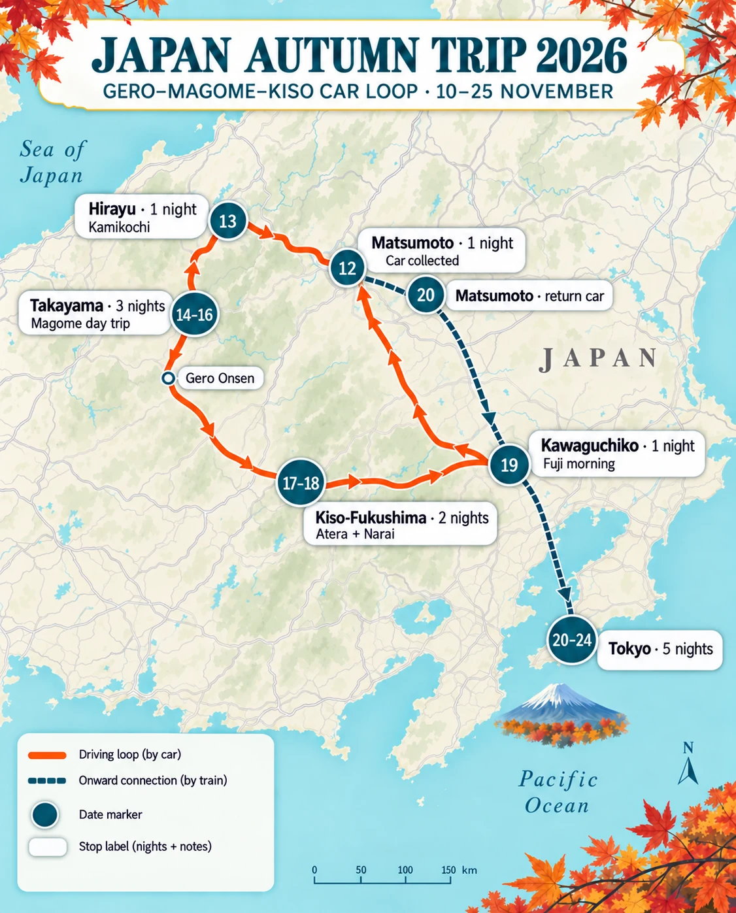
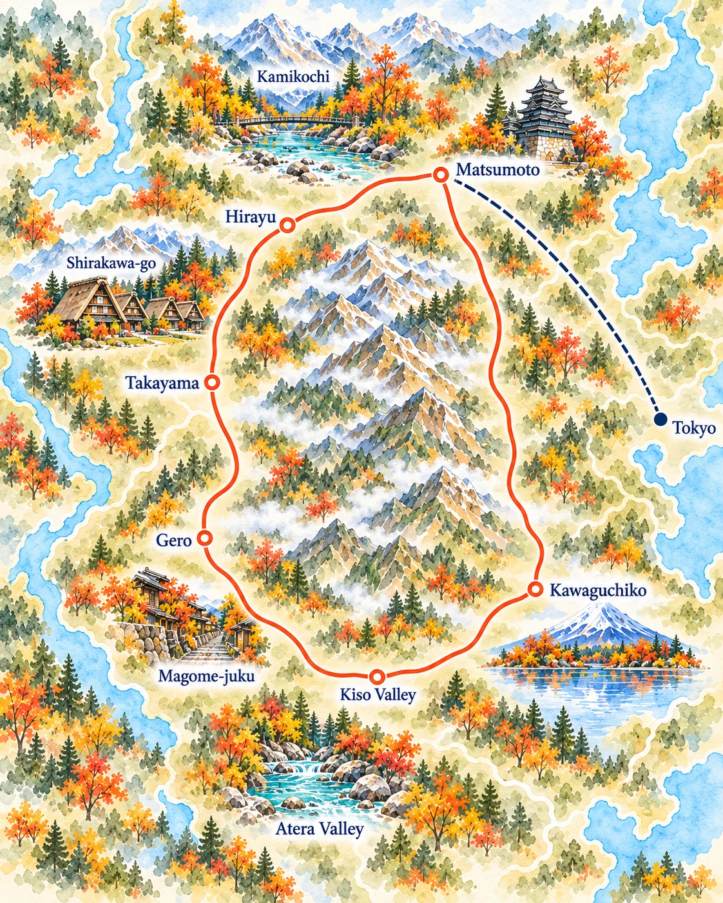
12 Nov Collect car · Matsumoto19 Nov Overnight · Kawaguchiko20 Nov Return car · 14:00
Practical driving notesVerified 22 Oct 2026 · routes, closures, parking and fuel
Three active closures affect this loopR158 at Nyukawa · R361 at Kuzō Pass · weekday access to Kakizore. The routes and fallbacks below account for them; recheck on each driving morning.
Matsumoto → Akandana → Takayama
Use R158 and the Abo road to Akandana. On 14 Nov, R158 is fully closed at Nyukawa after a landslide: a standard rental car may follow the signed city-road detour. It is narrow in places—ignore unsignposted sat-nav shortcuts.
Shirakawa-go + optional Ainokura
Use the E41 expressway, not mountain back roads. Seseragi Parking is open 08:00–17:00, last entry 16:30, ¥2,000. Add Ainokura via the main signed roads only if visibility and road conditions remain good.
Gero → Magome → Takayama
Use R41 to Gero, then R257 to Magome; return the same way. Park in a municipal lot at Gero and an A/B visitor lot at Magome. Magome’s preserved street is closed to ordinary traffic 10:00–16:00.
Kaida → Kiso-Fukushima → Narai
R361 at Kuzō Pass is closed 5 Oct–15 Dec. Follow the official detour via Prefectural Route 20 and the signed town road, with extra time for local traffic. If icy or still restricted, skip Kaida/Narai and use the lower R41 → R257 → R19 fallback to Hilltop.
Nezame → Atera; Kakizore conditional
Atera admits normal cars in November, but its road is narrow, has blind bends and no mobile signal: use marked parking, never a passing bay. Kakizore’s usual approach is closed on weekdays 5 Oct–18 Mar—including 18 Nov; use the signed passenger-car detour only with daylight, otherwise skip it.
Kiso ↔ Kawaguchiko ↔ Matsumoto
Prefer R19 → Chūō Expressway → Ichinomiya-Misaka IC → R137 through Shin-Misaka Tunnel, then reverse it on the 20th. Do not accept a faster-looking forest-road reroute. Leave Kawaguchiko by 09:30.
Do not wait for the mountains
Fill in Takayama before 16/17 Nov and top up around Kiso-Fukushima before Fuji. Rural pumps may close early; keep at least one-third of a tank. Before return, fill at the nearest open Matsumoto station and retain the receipt.
Confirm before 5 Nov
Get written confirmation of studless tyres on all four wheels, accepted IDP, roadside cover and an ETC card—the fitted ETC unit alone is not a card. Ask about chains: a chain restriction requires them even with winter tyres.
Action listBookings and checksThe reservations that can still affect the final route.
- 01Rental car · booked
J-net Matsumoto Station: 12 Nov 14:00 → 20 Nov 14:00, ¥63,535. Confirm accepted IDP, studless winter tyres and whether an ETC card is supplied. Free cancellation ends 5 Nov at 23:59 JST.
- 02Kamikochi
No bus reservation; recheck the 13 November weather, road and operating notices.
- 03Shirakawa-go · self-drive
No bus reservation. Confirm studless tyres and road conditions; navigate to Seseragi Parking and carry ¥2,000 for the car park.
- 04Magome self-drive
No transport booking. Save the official A/B parking map; the preserved street is closed to ordinary traffic from 10:00–16:00.
- 05Kiso stays
Confirm the 17–19 November base and parking arrangements.
- 06Kawaguchiko
Confirm the 19 November stay includes or permits parking and late-afternoon arrival.
- 07Matsumoto → Tokyo
Reserve the 20 November Azusa after fixing the car-return appointment.
2026 colour forecast · updated 21 OctoberFollow the colour down the mountainsCurrent reports confirm an early high-Alps finish and a later lowland season.
1 October forecast + 21 October live reportsColour is moving downhill
Japan's second national forecast keeps lowland colour near normal or later. Right now Hirayu is at peak while Takayama city is only starting and Kawaguchiko is beginning to turn—good evidence that the lower stops should carry the trip.
- Best bets
- Gero · lower Kiso · Kawaguchiko
- Watch closely
- Takayama · Magome · Shirakawa
- Winter mood
- Hirayu · Kamikochi
Mostly green
Turning
Peak colour
Late / fading
Leaves down
-
NovemberArrival
Tokyo
Central parks should be mostly green, with scattered yellow ginkgo and early maples.
EarlySave the serious garden visits for 22–24 Nov. -
NovemberCity colour
Matsumoto
Nagano's current forecast puts yellow leaves around 14 November, so the castle moat should still have useful gold.
Gold likelyUse the castle and Agatanomori on 12 Nov. -
NovemberHigh Alps
Hirayu
Expect bronze remnants, bare branches, frost and possible snow around the onsen village.
Past peakCome for onsen and cold mountain light. -
NovemberFinal access days
Kamikochi
The official maple and larch forecast finishes by 31 October. The valley should feel wintry.
Leaves downLandscape day, not a foliage day. -
NovemberLower Hida
Takayama
On 21 October Hida no Sato was nearing peak while Shiroyama was only starting. By mid-November, seek sheltered city trees rather than high slopes.
Late / mixedPrioritise Higashiyama and Shiroyama. -
NovemberDay trip
Shirakawa-go
A late-season mix of coloured lower slopes, bare ridges and perhaps the first snow.
Late peakGo early; normal window ends mid-November. -
NovemberBest bet
Gero Onsen
Maples around Onsenji and the riverside should be approaching or within peak colour.
Near peakProtect time for Onsenji, not only a footbath. -
NovemberTakayama day trip
Magome + Tsumago
The lower southern valley should hold a better red-and-gold mix than the high Alps. Use the direct seasonal coach and return to Takayama.
Mixed → goodThe delayed lowland season works in your favour. -
NovemberCentral Kiso
Kiso-Fukushima
Nagano's prefectural red-leaf forecast is 21 November. Lower river valleys may still be good; Narai and higher Atera forest will finish first.
Mixed / promisingChoose lower valley colour before higher sites. -
NovemberStrongest stop
Kawaguchiko
Trees were only beginning to turn on 19 October, supporting peak-to-late colour around the north shore during your stay.
Peak → lateDawn lakeshore; illuminated corridor at night. -
NovemberSeason building
Tokyo
The 1 October forecast puts Tokyo ginkgo around 26 November and red leaves around 28 November. Expect strong yellow build-up, with maples still early.
TurningUse gardens late in the stay; favour ginkgo first.
Best visual sequenceFrosted Alps → old-town amber → Fuji red → Tokyo gold
Forecasts are directional, not guarantees. Recheck wind, cold snaps and each local live tracker 7–10 days before arrival.
02
景色 · Places
The landscapes
that shape the trip
Three different expressions of autumn: timber towns, cold mountain light and the forested Kiso Valley.
01
14-17 Nov
Three-night base ↗Takayama
River walks, old timber streets and the quieter Higashiyama temples.
02
13 Nov
Open the day plan ↗Kamikochi
Cold river light, bare larch and the final days of the mountain season.
03
17-19 Nov
See the colour forecast ↗Kiso Valley
Cedar forest, river light and preserved post towns along the old Nakasendo.
04
13-14 Nov
Onsen night ↗Hirayu Onsen
A mountain ryokan, outdoor baths and one quiet night at the edge of Okuhida.
05
10-12 & 20-25 Nov
City days ↗Tokyo
Garden colour, rail energy and an urban contrast to the alpine middle.
06
19-20 Nov
See the colour forecast ↗Kawaguchiko
One lake overnight for Fuji at dawn and the strongest expected maple colour of the trip.
Planning archiveEarlier route optionsSuperseded alternatives retained for reference.
SDRouteCompact · five-day car loopMatsumoto–Takayama Car LoopVia Hirayu; return the car on 17 Nov13–17 NovCar
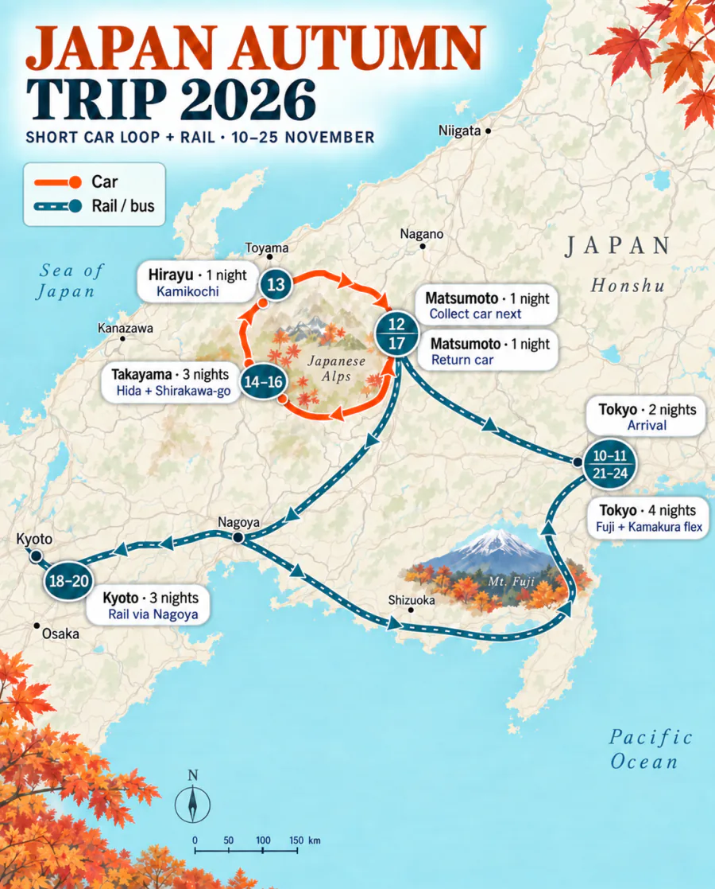
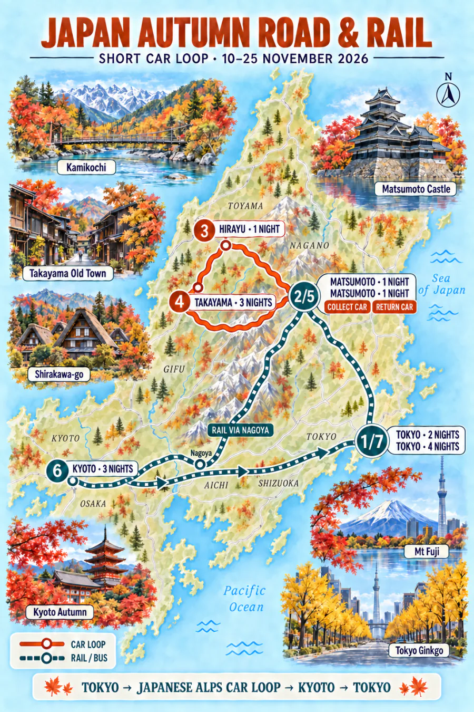
10-12 NovTokyo2 nightsArrival
12-13 NovMatsumoto1 nightCollect car next
13-14 NovHirayu1 nightKamikochi
14-17 NovTakayama3 nightsHida + Shirakawa-go
17-18 NovMatsumoto1 nightReturn car
18-21 NovKyoto3 nightsRail via Nagoya
21-25 NovTokyo4 nightsFuji + Kamakura flex
- 13 Nov: collect at opening time, 08:00, from Toyota Matsumoto Station; drive only to Sawando and use the regulated Kamikochi shuttle.
- 15 Nov: Hida-Furukawa by car. 16 Nov: early Shirakawa-go return trip.
- 17 Nov: allow 2½-3 hours Takayama → Matsumoto; return before dark where possible.
- The branch offers ETC-card rental and Toyota lists Matsumoto Station among winter-tyre-standard shops; still confirm the exact vehicle. Do not use this plan unless the rental desk accepts the IDP.
- Approximate driving: 330-370 km. Allow ¥7,000-9,000 for fuel, tolls and parking, excluding the rental.
RBRouteTransit alternative · lowest frictionTakayama Base by Train & BusPublic transport throughout; four nights in Takayama10–25 NovRail + bus
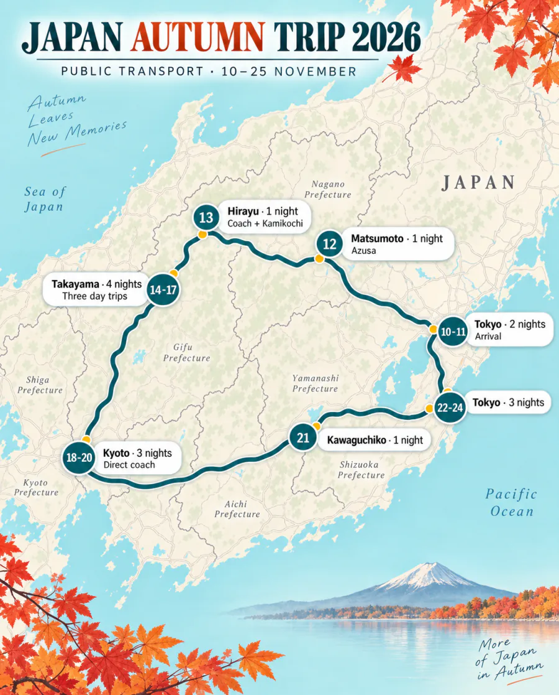
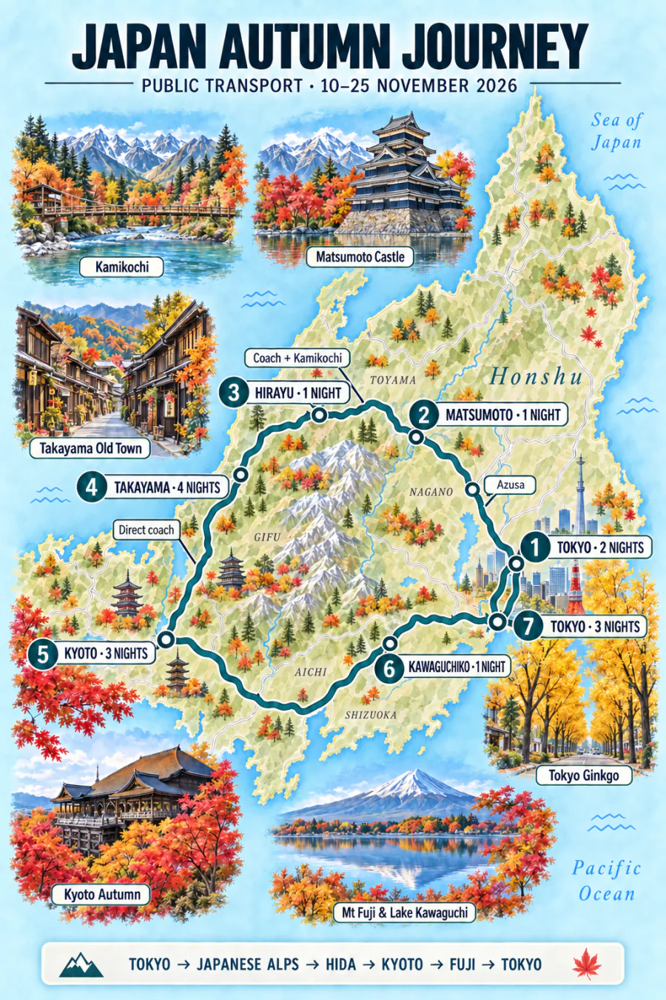
10-12 NovTokyo2 nightsArrival
12-13 NovMatsumoto1 nightAzusa
13-14 NovHirayu1 nightCoach + Kamikochi
14-18 NovTakayama4 nightsThree day trips
18-21 NovKyoto3 nightsDirect coach
21-25 NovTokyo4 nightsWeather flex
- 13 Nov: reserve Matsumoto 07:40 → Hirayu 09:08, drop bags, then use the Kamikochi shuttle.
- 15 Nov: Hida-Furukawa. 16 Nov: reserved Shirakawa-go day trip.
- 17 Nov: Nakasendo is the first choice; Gero is the easy fallback and Shinhotaka is visibility-dependent.
- 18 Nov: direct Takayama 13:40 → Kyoto 17:55 coach; the 08:00 service is the early alternative.
- No IDP risk, no winter driving and one fewer hotel change than the car version.
GKRouteScenic · longest car loopTakayama–Magome–Kiso Car LoopTakayama 3 + Magome 2 + Kiso 2 nights13–21 NovCar loop
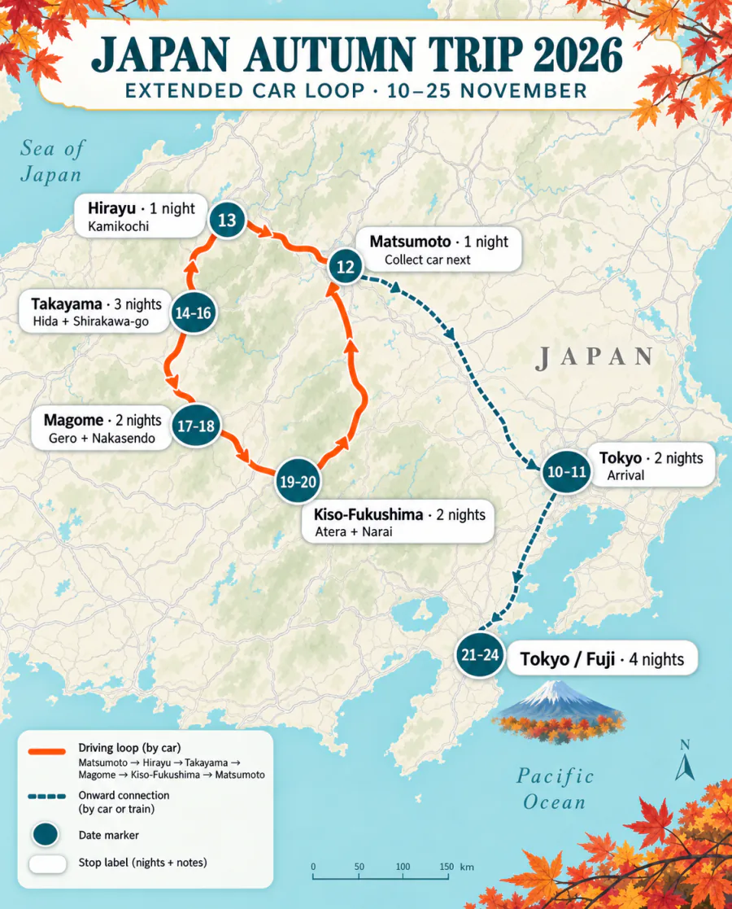
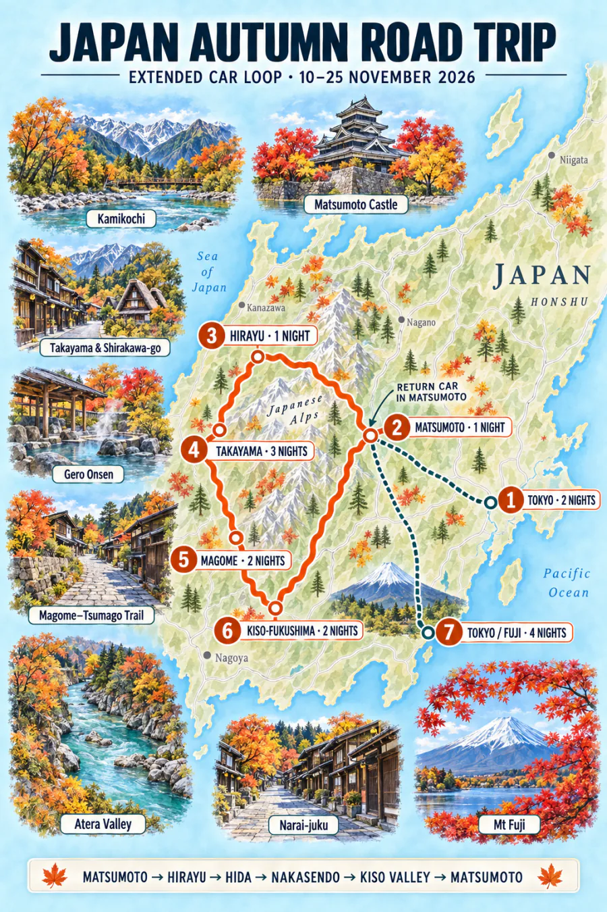
10-12 NovTokyo2 nightsArrival
12-13 NovMatsumoto1 nightCollect car next
13-14 NovHirayu1 nightKamikochi
14-17 NovTakayama3 nightsHida + Shirakawa-go
17-19 NovMagome2 nightsGero + Nakasendo
19-21 NovKiso-Fukushima2 nightsAtera + Narai
21-25 NovTokyo / Fuji4 nightsVia Matsumoto
- 13 Nov: collect at 08:00, drive to Sawando, use the regulated Kamikochi shuttle, then sleep in Hirayu. Recheck the late-season timetable and trail conditions the evening before.
- 14-16 Nov: three Takayama nights are well paced, not excessive: the first is an arrival day, followed by Hida-Furukawa and Shirakawa-go outings. Keep the final afternoon in each day flexible.
- 17 Nov: Takayama → optional Gero stop → Magome. 18 Nov: leave luggage at the Magome stay, drive to Tsumago and park, then use the 10:17 bus or a pre-booked taxi to Magome and walk back to the car.
- 19 Nov: pre-confirm a 10:00-13:00 Atera e-bike, keep luggage concealed in the locked car and treat Nezame-no-Toko as optional. 20 Nov: Narai and Kiso-Hirasawa day trip.
- 21 Nov: refuel and return the car in Matsumoto in the morning, then continue to Tokyo or Kawaguchiko.
- Use this version only with an accepted IDP and written confirmation of studless winter tyres for the exact vehicle.
What to do each day
One main outing each day, with the car loop kept deliberately unhurried.
- TokyoNight 1 of 2Arrive and reset
Land at Narita at 15:35, transfer to the hotel, eat nearby and sleep. No major sightseeing.
- TokyoNight 2 of 2Full neighbourhood day
Use Kagurazaka–Iidabashi, Daikanyama–Nakameguro and Koenji or Nakano; see the consolidated Tokyo playbook.
- Matsumoto1 nightCastle and old streets
Take the Azusa from Shinjuku, then see Matsumoto Castle, Nawate Street and Nakamachi. Confirm the next morning’s car collection.
- Hirayu1 nightKamikochi via Sawando
- 08:00Collect the car in Matsumoto, confirm the winter tyres and keep warm layers, gloves and grippy footwear accessible.
- 09:15–10:15Park at Sawando Bus Terminal, buy the non-reserved return ticket and shuttle into Kamikochi. If the stop is operating, get off at Taisho Pond.
- 10:15–12:30Walk Taisho Pond → Tashiro Pond → Tashiro Bridge → Kappa Bridge, staying on the main paths if there is frost or snow.
- 12:30–14:45Lunch near Kappa Bridge, then add the easy riverside or Dakesawa Marsh section. Skip the longer Myojin walk unless paths are dry and you have a comfortable return-bus margin.
- 15:00 onwardTake a shuttle that reaches Sawando before dusk, drive to Hirayu, check in and finish with the onsen and ryokan dinner.
- TakayamaNight 1 of 3Takayama old town
- 08:30–10:00Have breakfast, check out of Hirayu and drive to Takayama; park once and leave luggage at the accommodation.
- 10:15–12:00Visit Takayama Jinya and catch the last part of the Jinya-mae market before it closes.
- 12:00–14:30Lunch, then explore Sanmachi’s preserved streets, craft shops and sake breweries. The driver should save tastings for after the car is parked for the day.
- 14:30–16:15Walk the lower Higashiyama temple route; use the free Museum of History and Art or Showa-kan instead if it is wet or already getting dark.
- EveningCheck in and reserve a proper Hida beef, hoba-miso or Takayama ramen dinner rather than relying on old-town shops after they close.
- TakayamaNight 2 of 3Hida-Furukawa half-day
- 07:30–08:30Walk Takayama’s Miyagawa Morning Market and riverside before breakfast crowds build.
- 09:00–09:40Drive to Hida-Furukawa and use the free city-hall or station-side parking; leave the car for the whole visit.
- 09:45–12:30Walk the Setogawa canal and white-walled storehouses, the temple lanes and one indoor stop: the Festival Exhibition Hall or Takumikan craft museum.
- 12:30–14:00Have soba or a local lunch, browse the two sake breweries and return to Takayama. Only the non-driver should taste.
- 14:30 onwardChoose one relaxed Takayama extra: Sakurayama Hachimangu and the festival-float hall, Showa-kan plus a café, or simply an onsen and early dinner. Hida Folk Village is optional because Shirakawa-go follows tomorrow.
- TakayamaNight 3 of 3Early Shirakawa-go
- 07:30Leave Takayama early and drive directly to the official Seseragi parking area; do not take the car into the heritage village.
- 08:30–09:30Cross Deai Bridge and do the observation deck first, using the village shuttle if running or the signed walking route if open.
- 09:30–12:00Walk the quieter lanes, irrigation channels and viewpoints, then enter one representative house—Wada or Kanda—and Myozenji if time remains.
- 12:00–13:30Eat an early lunch, complete the southern village loop and return across Deai Bridge before the busiest afternoon period.
- 13:30 onwardDrive back to Takayama for a missed museum, café or onsen. Keep this buffer instead of adding Gokayama; it protects the day against parking queues, cold weather and early darkness.
- MagomeNight 1 of 2Gero stop, then Magome
- 08:30Leave Takayama after breakfast and drive south toward Gero.
- 10:00–12:00Use Gero for a riverside walk, footbath or one pre-checked day-use onsen, followed by an early lunch.
- 12:15–14:30Continue to Magome with a buffer for the mountain roads; do not add another major stop.
- 15:00 onwardCheck in, leave the car and stroll Magome’s sloping old street and viewpoint before shops close and daylight fades. Eat at the accommodation or reserve dinner nearby.
- MagomeNight 2 of 2Magome–Tsumago Nakasendo
Leave the luggage at your Magome accommodation. Drive to Tsumago, park in a designated lot and take the 10:17 bus—or a pre-booked taxi—to Magome. Walk the 8–9 km trail back to Tsumago, explore the old street and Wakihonjin, then finish at your car and drive back to the same Magome stay.
- Kiso-FukushimaNight 1 of 2Atera Valley cycling and Nezame-no-Toko
- 08:30Check out of Magome. Keep suitcases concealed in the locked car and carry passports, money and electronics in the daypack.
- 09:30Reach Atera Valley’s second parking area and complete the pre-confirmed e-bike pickup.
- 10:00–13:00Ride upstream at an easy pace, stopping around Tanuki-ga-fuchi, Kuma/Ushi-ga-fuchi and Bigansui or the campground before turning back.
- 13:00–14:00Return the bicycles and have a quick lunch or packed snack.
- 14:00 onwardAdd Nezame-no-Toko only if the weather, road and daylight are comfortable; otherwise continue directly and check in at Kiso-Fukushima by roughly 15:30–16:00.
- Kiso-FukushimaNight 2 of 2Narai and Kiso-Hirasawa
- 08:30Leave luggage at the accommodation and drive north; park outside Narai’s preserved street.
- 09:15–12:15Walk Narai-juku before the busiest period, choose one historic residence or small museum, and browse the wooden shops.
- 12:15–13:15Have soba, gohei-mochi or a simple local lunch in Narai.
- 13:30–15:00Drive the short distance to Kiso-Hirasawa and focus on lacquerware shops or a workshop rather than another long walk.
- 15:45 onwardReturn to Kiso-Fukushima for Kozenji, the Uenodan old quarter or the public footbath, then have an unhurried final Kiso dinner.
- Tokyo / FujiNight 1 of 4Return car and transfer
Leave after breakfast, refuel and return the car in Matsumoto by late morning. Continue after lunch to Tokyo or Kawaguchiko; add no major sightseeing.
- Tokyo / FujiNight 2 of 4Clear-sky Fuji window
If staying by the lake, use sunrise and the north/east shore before Tokyo. Otherwise, make the day trip only with a strong visibility forecast.
- TokyoNight 3 of 4Public-holiday Tokyo
Choose one walkable neighbourhood and a park or garden with good live autumn colour; reserve any important meal.
- TokyoNight 4 of 4Kamakura or weather swap
Start at Kita-Kamakura, walk selected temple grounds and continue toward Hase or the coast—or use this as the Fuji day if skies are clearer.
- DepartureNarita T2Airport only
Leave the Tokyo hotel around 09:00–09:30 for the 14:20 flight. Keep the morning free of sightseeing.
BKRoutePreferred · final planGero–Magome–Kiso Car LoopThree Takayama nights · Magome day trip · Kiso and Fuji12–20 NovCar + rail
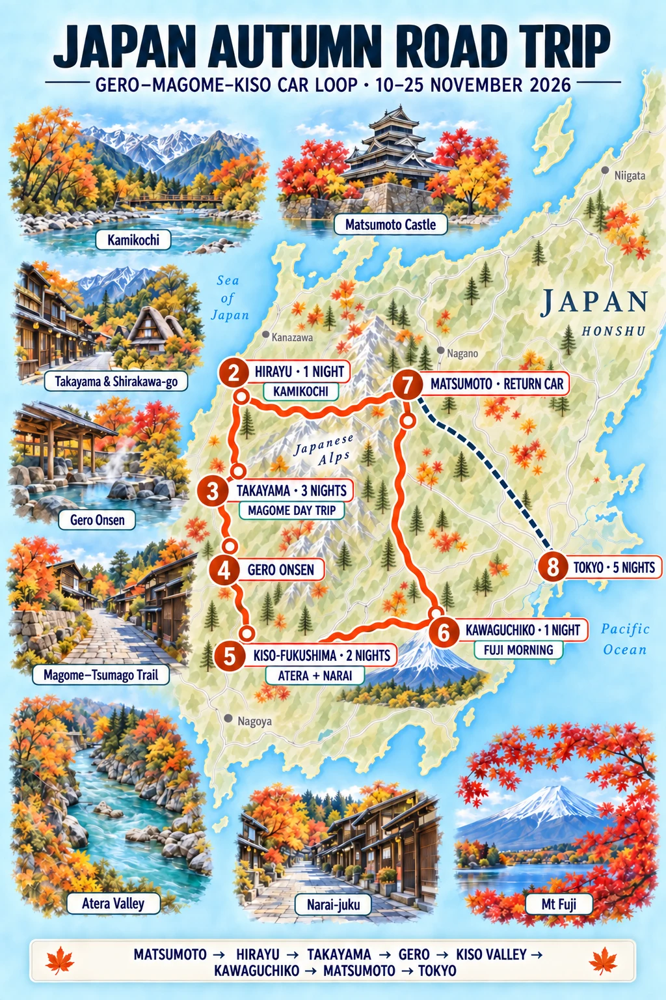
10–12 NovTokyo2 nightsArrival
12–13 NovMatsumoto1 nightCollect car · 12 Nov, 14:00
13–14 NovHirayu1 nightOnsen first
14–17 NovTakayama3 nightsShirakawa + Magome day trips
17–19 NovKiso-Fukushima2 nightsNakasendo + valley
19–20 NovKawaguchiko1 nightDrive from Kiso
20–25 NovTokyo5 nightsOne day trip
- This version focuses on streets, gardens, scenery, short walks and onsen.
- Sunset is around 16:35–16:45. Protect the Magome day trip, Gero stop and Atera Valley daylight rather than adding extra stops.
- On 16 November, leave the car parked in Takayama and use the direct seasonal coach to Magome. Reserve the return seats as soon as the 2026 timetable opens.
- On 17 November, check out after breakfast, stop in Gero, then reach Kiso-Fukushima before dark.
- On 19 November, leave Kiso early enough to reach Kawaguchiko before dusk. On 20 November, use the Fuji morning, drive back to Matsumoto, refuel, return the car and take the Azusa to Tokyo.
- Confirm the accepted IDP, studless winter tyres, ETC card and roadside cover in writing for the exact rental vehicle.
What to do each day
Three Takayama nights and only one major outing per day.
- TokyoNight 1 of 2Arrival + Shinjuku after dark
Land at Narita Terminal 2 at 15:35, transfer to Shinjuku, then use the evening for Omoide Yokocho, Kabukicho and Shin-Okubo. Allow 1½–2 hours for immigration, bags and IC-card setup.
- TokyoNight 2 of 2Full neighbourhood day
Use Kagurazaka–Iidabashi, Daikanyama–Nakameguro and Koenji or Nakano. Skip repeat headline sights and pack after dinner.
- Matsumoto1 nightCastle, old streets and rental pickup
After arriving, walk the castle exterior and moat, Nawate Street, Yohashira Shrine and Nakamachi. Collect the rental car from J-net Matsumoto Station Store at 14:00 on 12 November, confirm studless winter tyres and keep it parked overnight.
- Hirayu1 nightKamikochi via Akandana
- 07:00–07:15Wake, check out and leave with breakfast bought the night before. Keep the luggage concealed in the locked boot.
- 08:30–08:50Park at Akandana, buy the non-reserved return ticket and board the 08:50 shuttle; 09:20 is the fallback.
- 09:16–11:00Get off at Taisho Pond and walk via Tashiro Pond and Tashiro Bridge to Kappa Bridge.
- 11:00–12:35Lunch near Kappa Bridge and add only the short Dakesawa Marsh riverside walk if paths are comfortable.
- 13:00–14:10Take the 13:00 or 13:30 return shuttle, collect the car and reach the Hirayu stay well before check-in.
- TakayamaNight 1 of 3Hirayu to Takayama
- MorningHave breakfast and an unhurried onsen, then check out.
- Late morningDrive to Takayama, leave luggage and park once.
- AfternoonUse Takayama Jinya, Sanmachi, the riverside and the lower Higashiyama route according to weather and daylight.
- EveningCheck in and reserve a proper Hida beef, hoba-miso or Takayama ramen dinner.
- TakayamaNight 2 of 3Shirakawa-go + optional Ainokura
- 08:15Leave Takayama after breakfast and drive about one hour via E41 to Seseragi Parking.
- 09:15–12:45Walk the southern lanes, visit one gassho house and use the observatory shuttle or uphill path.
- 13:00–15:00If roads are clear, drive to Ainokura for a quiet 60–90 minute village walk; otherwise return directly.
- By 17:00Return to Takayama. Skip Ainokura if parking delays, snow or ice consume the buffer.
- TakayamaNight 3 of 3Magome + Tsumago day trip
- 08:00Leave the car parked and take the reserved seasonal coach from Takayama to Magome.
- 10:45–13:00Walk Magome’s sloping old street and viewpoints, then continue toward Tsumago only as far as the confirmed return timetable comfortably allows.
- AfternoonUse the local connection between the post towns if operating, then take the reserved 15:00 coach back to Takayama.
- EveningReturn to the same hotel for an easy final Takayama evening.
- Kiso-FukushimaNight 1 of 2Gero Onsen, then Kiso-Fukushima
- 09:00Check out and drive from Takayama to Gero.
- 10:15–12:30Walk the riverside and Onsenji area, use a footbath or prearranged day-use onsen, then have an early lunch.
- 12:30–15:30Drive to Kiso-Fukushima with a generous mountain-road buffer.
- Before darkCheck in, then use the remaining light for the riverside or public footbath.
- Kiso-FukushimaNight 2 of 2Atera Valley and Nezame-no-Toko
- 10:00Leave after breakfast. Use short roadside viewpoints and a manageable valley walk rather than relying on seasonal bicycle rental.
- 12:30–13:30Lunch around Nojiri, Agematsu or from a prepared picnic, depending on what is open.
- 13:30–15:15Visit Nezame-no-Toko. Use the upper viewpoint if wet rocks, fatigue or fading daylight make the descent undesirable.
- 16:00 onwardReturn to Kiso-Fukushima for the riverside, footbath and an unhurried evening.
- Kawaguchiko1 nightKiso-Fukushima to Kawaguchiko
- 08:30Check out, load the car and leave Kiso-Fukushima.
- 09:15–11:00Use Narai-juku as the one substantial stop; skip Kiso-Hirasawa if it threatens the daylight drive.
- 11:15–15:00Drive toward Kawaguchiko with a lunch and road-conditions buffer.
- 15:00 onwardCheck in, park and use the remaining light for the lakeshore or Momiji Corridor.
- TokyoNight 1 of 5Fuji morning → Matsumoto → Tokyo
- Dawn–08:45Use the clearest hours at the lake for north-shore Fuji views, then check out.
- By 09:30Leave Kawaguchiko and drive back to Matsumoto with a road buffer.
- 13:15–14:00Refuel, reach J-net Matsumoto Station Store by 13:30 and complete the confirmed 14:00 return.
- AfternoonTake a later reserved Azusa to Tokyo, check in and keep the evening local.
- TokyoNight 2 of 5Tsukiji, Hamarikyu and east Tokyo
Reach Tsukiji around 08:30, continue to Hamarikyu, then use the afternoon for Kiyosumi-Shirakawa and Monzen-Nakacho.
- TokyoNight 3 of 5Rikugien, Yanaka and Nezu
Leave bags at the Asakusabashi hotel, enter Rikugien near opening, then continue through Yanaka, Sendagi and Nezu before a late dinner.
- TokyoNight 4 of 5Movable landscape slot
Use the 48-hour forecast to choose Izu, Chichibu–Nagatoro, Kamakura or a dense Tokyo day; 23 November is a public holiday.
- TokyoNight 5 of 5Second movable full-day slot
Use whichever priority remains after the weather-led choice. Kamakura is the robust default; see the consolidated Tokyo playbook.
- DepartureNarita T2Airport only
Leave Shinjuku around 09:00–09:30 for the 14:20 flight from Narita Terminal 2. Keep the morning free of sightseeing.
PTRouteNo car · booked Kiso staysMagome & Kiso by Public TransportAB Hotel, Nezame Hotel, Nakasendo and lower Atera Valley10–25 NovRail + bus
10–12 NovTokyo2 nightsArrival
12–13 NovMatsumoto1 nightAzusa
13–14 NovHirayu1 nightCoach + onsen
14–16 NovTakayama2 nightsKamikochi + Shirakawa
16–17 NovMagomeAB Hotel, Nakatsugawa · 1 nightPost town
17–19 NovKiso-FukushimaNezame Hotel, Agematsu · 2 nightsNakasendo + Atera
19–20 NovKawaguchiko1 nightEvening arrival
20–25 NovTokyo5 nightsCity + Kamakura
- Carry the bags between hotels. On 17 November, use only the same-day Magome–Tsumago luggage service: with two large suitcases and two 40-litre backpacks, hiking the trail without it is not practical. Budget ¥4,000 for four pieces; drop by 11:30 and collect by 17:00.
- Board rural buses at their starting point where possible and keep the backpacks compact. Large coach holds are straightforward; small local buses have limited floor space.
- AB Hotel is reached by local bus from Nakatsugawa Station to Tegano-naka. Nezame Hotel is reached from Agematsu Station by town bus to Chugakko; the hotel does not provide a shuttle.
- Buy lunch before the Nakasendo and Atera days. Magome, Tsumago and the Kiso towns have cafés and restaurants, but choices thin out after mid-afternoon and closing days vary.
- The 17 November late-start sequence has only a short margin before the luggage counter closes. Confirm the service directly; use the earlier 08:38 local bus from Tegano-naka if it will not hold four pieces.
- Planning times reflect current published schedules and can change before November 2026. Recheck every rural leg when autumn timetables are released.
What to do each day
Late starts where they work, carried luggage between bases and the fewest sensible transfers.
- TokyoNight 1 of 2Arrival + Shinjuku after dark
Transfer from Narita to Shinjuku, check in, then use the neighbourhood until late.
- TokyoNight 2 of 2Full neighbourhood day
Use Kagurazaka–Iidabashi, Daikanyama–Nakameguro and Koenji or Nakano; skip repeat headline sights.
- Matsumoto1 nightAzusa and old streets
Take an Azusa around 10:00. After lunch, walk the castle exterior and moat, Nawate, Yohashira Shrine and Nakamachi.
- Hirayu1 nightSlow Hirayu afternoon
After an 08:30 wake-up, take a reserved mid-morning direct coach from Matsumoto to Hirayu. Check in or leave bags, have lunch, then choose the village, footbath or waterfall if paths are comfortable. Finish with the onsen.
- TakayamaNight 1 of 2Kamikochi, then Takayama
Ask the Hirayu stay to hold the large bags after checkout. Around 09:30, shuttle to Kamikochi and walk Taisho Pond → Tashiro Pond → Kappa Bridge. Return around 14:00–14:30, collect the bags and take the direct bus to Takayama.
- TakayamaNight 2 of 2Shirakawa-go
Use the reserved 09:35 Nohi bus, visit the viewpoint and village lanes, and return around 14:05. Spend the remaining daylight in Takayama’s old streets and by the river.
- NakatsugawaAB Hotel · 1 nightTakayama → Magome → AB Hotel
- 08:00–10:45Take the reserved direct Nohi coach to Magome with all luggage in the hold. This is the trip’s only necessary pre-08:30 wake-up.
- 10:45–15:30Store the bags at Magome BASE, have lunch and explore the post-town street without rushing.
- 15:50–16:15Take the Kitaena bus from Magome to Nakatsugawa Station.
- 16:45 onwardUse the local bus to Tegano-naka, then walk to AB Hotel. Eat near the hotel or buy dinner at Nakatsugawa Station before boarding.
- AgematsuNezame Hotel · night 1 of 2Nakasendo trail, then Nezame
- 09:56–10:08Take the local bus from Tegano-naka to Nakatsugawa Station, carrying every bag.
- 10:45–11:10Bus to Magome. Immediately hand all four pieces to the same-day luggage counter before its 11:30 cutoff.
- 11:15–14:30Walk the 8–9 km Nakasendo trail to Tsumago. Carry water and a packed lunch; daylight matters more than a sit-down meal.
- 14:30–16:00See Tsumago’s old street and collect the bags. Take the 16:14 bus to Nagiso.
- Around 17:00Use the next direct local train to Agematsu, then the 18:05 town bus to Chugakko and walk to Nezame Hotel. Recheck the exact railway minute before booking.
- AgematsuNezame Hotel · night 2 of 2Lower Atera Valley and Nezame-no-Toko
- 09:11–09:52Leave luggage at the hotel; bus from Chugakko to Agematsu, then local train to Nojiri.
- 10:20–11:45Walk about 30 minutes to Atera Valley and see only the lower-valley water and viewpoints. Turn back early enough to protect the sparse train.
- Around 12:25Train north to Kiso-Fukushima for lunch, riverside and Uenodan. Check the live schedule before setting out.
- Around 15:10Take the through town bus toward Chugakko. Visit Nezame-no-Toko from the hotel side before dark; use the upper viewpoint if rocks are wet.
- Kawaguchiko1 nightNarai and Hirasawa, then the lake
- 09:11Town bus to Agematsu with every bag; take the next direct local train north to Narai, currently around 10:55.
- Late morningStore the luggage at Narai’s staffed tourist office, walk the old street, then collect it before continuing one stop to Kiso-Hirasawa.
- AfternoonBrowse lacquerware with the bags, then take a local train to Shiojiri. Reserve an Azusa that stops at Otsuki and change once there for Kawaguchiko.
- EveningExpect arrival around 20:00–21:00 if Hirasawa is retained. Buy dinner before the final leg and notify the accommodation of the late check-in.
- TokyoNight 1 of 5Fuji morning, then neighbourhoods
Use the clearest lakeside hours, reach Tokyo in the early afternoon, drop bags and continue through Nakano–Koenji or Kappabashi–Kuramae–Akihabara.
- TokyoNight 2 of 5Tsukiji, Hamarikyu and east Tokyo
Reach Tsukiji around 08:30, continue to Hamarikyu, then spend the afternoon around Kiyosumi-Shirakawa and Monzen-Nakacho.
- TokyoNight 3 of 5Rikugien, Yanaka and Nezu
Leave bags at Asakusabashi, enter Rikugien near opening, then continue through Yanaka, Sendagi and Nezu.
- TokyoNight 4 of 5Izu or Chichibu–Nagatoro
Choose Izu for maximum coastal spectacle or Chichibu–Nagatoro for late-autumn colour, a river boat, ropeway and nostalgic countryside.
- TokyoNight 5 of 5Kamakura
Leave around 09:00–09:30 for Kita-Kamakura, a small number of temple grounds, Hase and the coast.
- DepartureNarita T2Airport only
Leave Shinjuku around 09:00–09:30 for the 14:20 flight.
16 November · selected planMagome → Tsumago day tripReserved direct coach from Takayama; the rental car stays parked.
Why are there four plans?
Two decisions create four combinations
Choose how you travel from Takayama and where you sleep on 16 November. Each box below is one complete plan.
Transport ↓
Night →
Night →
Return to Takayama
Stay in Magome
Rental car
Option 1Drive day tripOption 2 · Best by carDrive + overnight
No car
Option 3Direct-bus day tripOption 4 · Best without carDirect bus + overnight
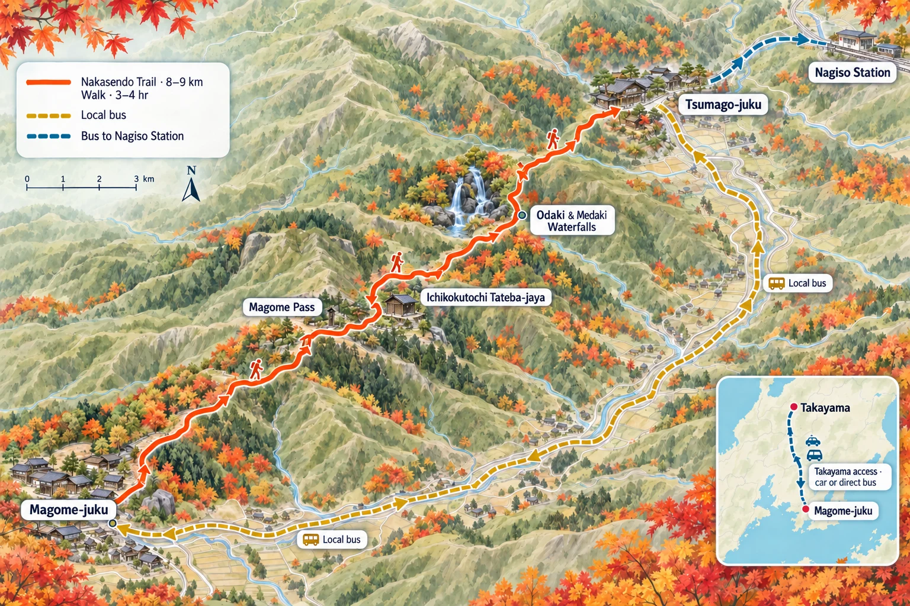
Reserve Takayama Bus Center → Magome. Leave the rental car parked in Takayama.
Start by 11:00 and follow the Nakasendo from Magome to Tsumago. Carry lunch and water.
Board the reserved direct coach at Tsumago. Be at the stop by 14:45.
Drive + sleep in Takayama
Park in Magome, walk to Tsumago, take the local bus back to your car, then drive to Takayama after dark.
Leave Takayama; reach Magome around 11:15.
Park, see Magome and eat an early lunch.
Walk Magome → Tsumago.
Explore Tsumago and reach the bus stop.
Local bus Tsumago → Magome; collect the car.
Drive back to Takayama in darkness.
Drive + sleep in Magome
Enjoy Magome on 16 November. Next morning, park in Tsumago, take the bus to Magome first, then walk back to your car without a deadline.
Drive Takayama → Magome; arrive around 11:15.
Park at the inn, check in and explore Magome before dusk.
Drive about 30 minutes to Tsumago and park.
Local bus Tsumago → Magome.
Walk Magome → Tsumago, finishing at your car.
Lunch or explore Tsumago, then continue through Kiso.
No car + sleep in Takayama
The reserved Nohi bus drops you at Magome and collects you at Tsumago. No local bus or taxi is needed.
Direct Nohi bus Takayama → Magome.
Quick preparation; buy food before starting.
Walk Magome → Tsumago.
Brief Tsumago visit; be early for the coach.
Direct Nohi bus Tsumago → Takayama.
No car + sleep in Magome
Stay in Magome, send your bags ahead, walk to Tsumago next morning, then take a local bus to Nagiso Station and continue by train.
Direct Nohi bus Takayama → Magome; arrive 10:45.
Leave bags at the inn and explore Magome.
Give luggage to the same-day transfer counter.
Walk Magome → Tsumago.
Lunch, explore Tsumago and collect bags.
Local bus Tsumago → Nagiso, then train onward.
Final choice
Use Option 3: the reserved direct coach lets you walk one-way from Magome to Tsumago without repositioning the car or changing hotels.
Direct Takayama bus ↗2026 local timetable ↗Trail + luggage service ↗Official trail map ↗Takayama–Magome drive ↗Reddit: car-return issue ↗Trail walkthrough vlog ↗
Times are planning estimates for 16–17 November 2026. Reserve the direct Nohi bus; local buses are cash only. INR uses ¥1 ≈ ₹0.613. Recheck weather, trail status and timetables shortly before travel.
Friday · 13 November · final operating weekKamikochi day tripMatsumoto → Akandana → Taisho Pond walk → Hirayu by early afternoon.
Best realistic planTake the 08:50 shuttle
Wake at 07:00, leave Matsumoto by 07:15 with breakfast bought the night before, and allow 75–85 minutes for Route 158. The 09:20 and 09:50 buses are easy fallbacks.
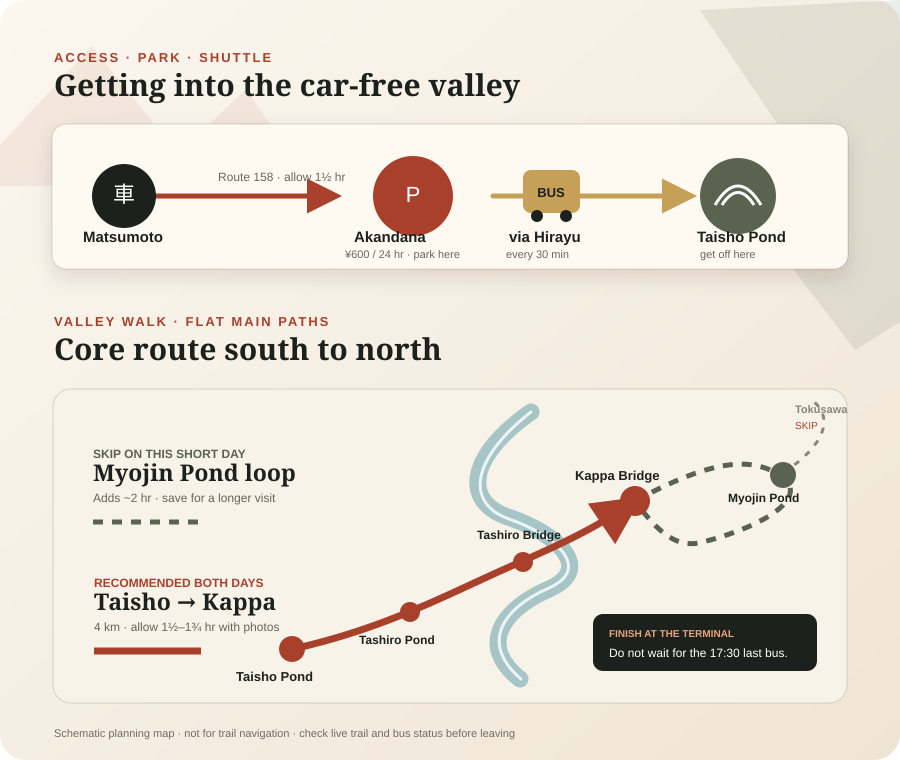
Akandana Parking
Private cars cannot enter Kamikochi. Navigate to the official car park—not Hirayu Bus Terminal—and keep luggage concealed in the locked boot.
- Parking
- ¥600 / 24 hr
- Navigation
- Hirayu 791-38
Okuhida, Takayama
No reservation
Use the Akandana ticket machine and queue 15–20 minutes early. Buses run every 30 minutes and boarding is first-come, first-served.
- Return / adult
- ¥2,800
- Two adults + car
- ¥6,200 total
Three calm hours in the valley
Leave Matsumoto. Eat before departure or carry breakfast; do not spend the bus margin searching for food en route.
Park at Akandana, use the toilet, buy the return ticket and join the queue.
Shuttle toward Kamikochi. Get off at Taisho Pond at 09:16, one stop before the main terminal.
Walk Taisho Pond → Tashiro Pond → Tashiro Bridge → Kappa Bridge, allowing time for photos.
Kappa Bridge, packed lunch and—only if paths are comfortable—a short Dakesawa Marsh riverside extension.
Return from Kamikochi Bus Terminal, platform 5. Reach Akandana at 13:30 / 14:00, then drive five minutes to Hirayu.
Time in Kamikochi3 hr 44 min on the 13:00 return · 4 hr 14 min on the 13:30 return
Protect the morning
Buy breakfast, water and a light lunch in Matsumoto; several Kamikochi facilities close early for the season.
The Taisho–Tashiro path is quieter than the terminal area. Kappa Bridge will be busiest around lunch.
Walk five minutes away from the bridge for calmer river views. Skip the full Myojin loop on this schedule.
Join the return queue 20 minutes early. If one bus fills, the next leaves 30 minutes later.
Late-season realityCold, possibly icy and mostly past foliage peak
Core walk
Taisho Pond → Tashiro Pond → Tashiro Bridge → Kappa Bridge3.8–4 km, mostly flat; allow 1½–1¾ hours with photographs.
Short extension
Kappa Bridge → Dakesawa Marsh → Kappa BridgeAdd about 20–30 minutes only if the path is dry and the return queue margin remains comfortable.
Longer routes
Myojin, Tokusawa and mountain trailsThey dilute a short visit and create unnecessary bus pressure, especially with frost or snow.
Before leavingWeather decides
Check the live webcam, trail notices and Nohi Bus status before driving from Matsumoto.
Late-season realityWinter, not peak foliage
Expect bare larch, frost and possible snow. Sunset is about 16:43; the valley becomes shaded earlier.
CarryFood + winter layers
Pack lunch and water. Wear thermal layers, fleece/down, shell, gloves, beanie and grippy waterproof shoes.
DrivingConfirm winter tyres
Route 158 and the Hirayu approach can be icy. Keep the car at Akandana rather than searching for informal parking.
Costs: ¥2,800 return per adult + ¥600 parking = ¥6,200 total for two adults and one car. Recheck weather and operating status shortly before travel; the 2026 shuttle season ends after 15 November.
Sunday · 15 November · self-driveShirakawa-go day tripTakayama → Ogimachi walking loop → optional Ainokura → Takayama.
Best realistic planLeave Takayama at 08:15
Wake around 07:30, eat breakfast and use the E41 expressway. Aim to park by 09:15, before the Sunday coach wave and parking queue build. Spend 3–3½ hours in Ogimachi, then decide whether road conditions and energy justify Ainokura.
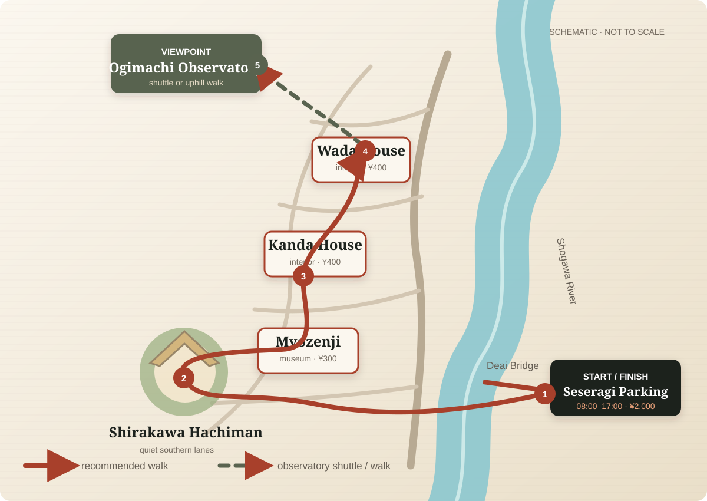
Seseragi Parking
Navigate to the official village car park. Do not drive into the heritage lanes; cross the pedestrian Deai Bridge from the parking area.
- Hours
- 08:00–17:00
- Ordinary car
- ¥2,000
Shuttle from Wada House
The only village shuttle is the observatory service. The latest official map lists departures every 20 minutes and ¥300 each way; carry cash and verify the notice on arrival.
- Alternative
- 20–25 min uphill
- Village visit
- 3–3½ hr
One clean village loop
Leave Takayama. Use E41 and follow signs from Shirakawago IC to Seseragi Parking; allow about an hour without a queue.
Park, cross Deai Bridge and start in the quieter southern lanes around Shirakawa Hachiman Shrine and Myozenji.
Walk north through the irrigation lanes. Enter one representative house: Kanda or Wada, both currently ¥400 per adult.
From Wada House, take the shuttle or signed uphill path to the observatory. Descend before lunch.
Eat near the bus-terminal/northern area, then return through the village rather than repeating every museum.
Cross Deai Bridge, use the toilets and make the add-on decision at the car.
Core cost for two¥2,000 parking + ¥800 one house + up to ¥1,200 return viewpoint shuttle
Add quiet Ainokura
Leave Shirakawa-go and drive roughly 30–40 minutes north toward Ainokura Gassho-zukuri Village.
Park in the official village lot. Current conservation fee is ¥1,000 per car.
Walk the small village and take the 5–6 minute path above the terraced fields for the full-village view.
Leave for Takayama. Allow about 1½ hours plus a weather buffer; the final stretch may be after sunset.
Why add itSmaller, calmer and more atmospheric than adding another busy city
Ainokura
Another UNESCO village, but much quieterWorth the extra driving because the car gives you flexibility that buses do not. Keep the visit to 60–90 minutes and leave by 15:00.
Shirakawa-go only
Back in Takayama around 14:00–14:30Choose this if parking was slow, the weather is poor or you want the afternoon for Takayama cafés, museums or an onsen.
Not Kanazawa
Possible on paper, poor as an add-onIt adds roughly three more driving hours after Shirakawa-go and leaves too little time for Kenrokuen, the castle area and Higashi Chaya before a dark return.
Sunday trafficArrive before 09:30
Recent drivers report parking queues by late morning. If Seseragi is full, follow staff to the overflow lot rather than circling.
Road safetyStudless tyres
Mid-November can bring snow or ice in Hida. Skip Ainokura if the live road report is poor or precipitation begins.
CarryCash + warm layers
Parking, the observatory shuttle and smaller interiors may require cash. Wear waterproof shoes and keep an insulating layer handy.
Do not useHakusan White Road
Its winter closure normally starts before your visit. Use E41 and Route 156; do not let navigation route you onto a closed scenic road.
Official access + parking ↗Official village map ↗Official visit + shuttle FAQ ↗Ainokura official guide ↗Open full driving route ↗
Planning estimates for Sunday 15 November 2026. The village is residential: stay on public paths, take litter away and do not enter private land. Recheck the live weather, E41 road status, parking notice and observatory shuttle on the morning of travel.
04 · Kamakura / ShōnanKamakura coast
& sunset day tripA slow afternoon of trains, seaside roads and photographs. Temples are optional.
Preferred · Wed 11 November
Kamakura by the sea
Leave Tokyo around noon. Ride the Enoden, wander Shichirigahama and watch the light change over the water. Keep Nagatoro for 24 November.
Choose the day ↓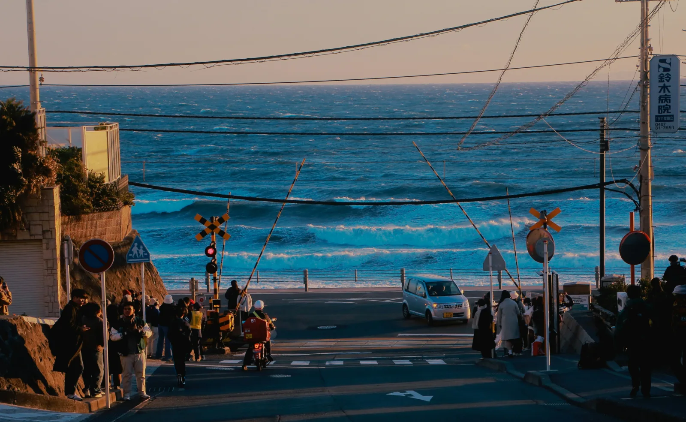
Choose one beach or the short coastal route.
Hotel to coast, with transfers and waiting.
November dates · settle in by 15:45–16:00.
Leave the coast after the afterglow, around 17:00.
Which Tokyo day works best?
Ranked for this trip as a whole: Kamakura is a definite outing, Nagatoro is preferred on the 24th, and all Tokyo neighbourhood plans can move. A clearer, calmer afternoon can outweigh this ranking.
- #1Wed 11 NovBest choice
Weekday · no hotel move
Leave around noonDetails
Weekday, Shinjuku base and no hotel move. A noon departure allows recovery after the arrival flight. Tsukiji breakfast can fit if you feel rested; skip extra Tokyo stops if tired.
- #2Sat 21 NovEasy fallback
Long-weekend crowds
Start in IkebukuroDetails
Leave from House Ikebukuro and return to the same hotel. Move Tsukiji elsewhere if desired. This is part of the long weekend: expect busy trains and photo spots.
- #3Sun 22 NovAfter hotel move
Drop bags first
Aim to leave by noonDetails
Check out, take bags to APA Asakusabashi and confirm pre-check-in storage. Aim to leave for the coast by noon. Move Rikugien and Yanaka to another day; return for check-in after sunset. Holiday-weekend crowds still apply.
- #4Tue 24 NovSave for Nagatoro
Good weekday backup
Use if plans changeDetails
A strong weekday for Kamakura itself, but preferably save it for Nagatoro. Move Kamakura here if you drop or reschedule Nagatoro, or if this is the only promising coastal afternoon.
- #5Mon 23 NovLast choice
Public-holiday crowds
Only for better weatherDetails
Labour Thanksgiving Day. Use it if weather is clearly better; keep to the short coast route and allow more time for the Enoden. No hotel move, but less likely to feel peaceful.
Unavailable for a sunset outing: 10 Nov — Narita arrival at 15:35; 12 Nov — Azusa and Matsumoto car pickup; 20 Nov — Fuji, car return and Tokyo transfer; 25 Nov — Narita flight at 14:20. Do not squeeze Kamakura into these dates.
The short coastal route
Use Enoden between these stops; the walks are optional. For temples, an earlier start and a geographic map, see the longer option below.
Kamakurakōkōmae
Sea-facing station and the famous railway crossing. Give it 15–20 minutes; move on if crowded.
Station pin ↗Enoden 1 stop · ≈2–3 min →
Optional walk: 20–30 min
Optional walk: 20–30 min
Shichirigahama
Coastal road, surfers, coffee and beach views. Spend an unhurried hour here; staying for sunset is a complete plan.
Beach pin ↗Enoden 1 stop · ≈3 min →
Then 5–10 min walk to park
Then 5–10 min walk to park
Inamuragasaki Park
Look towards Enoshima and, when clear, Fuji. Arrive before sunset and stay for the afterglow.
Sunset pin ↗Your afternoon
Leave Tokyo. If doing Tsukiji first, continue via Tokyo/Shimbashi and the Yokosuka Line instead of returning to the hotel.
Reach Kamakurakōkōmae for the optional crossing stop, then walk or ride to Shichirigahama.
Lunch or coffee and a leisurely coastal wander. Avoid a long café queue that consumes the light.
Settle at Shichirigahama or Inamuragasaki. Do not keep changing locations during golden hour.
Sunset around the 11th / 21st–24th respectively. Stay another 20–30 minutes if comfortable.
Enoden to Kamakura, then JR to Tokyo. Dinner back near the hotel around 19:00.
Three versions
2 hours · Just the sea
Reach Shichirigahama around 14:45. Coffee, beach, sunset, home. Skip the crossing and the second viewpoint.
3–4 hours · Recommended
Follow the coastal route above. Roughly 2–3 km of walking if using both walking legs, plus local wandering.
6–7 hours · Temples + coast
Arrive Kamakura around 10:15 for Hase-dera and optional Great Buddha. Use Enoden between coastal stops. See the detailed longer option and map below.
Enoshima is a separate extension. Its island lanes and stairs need more time. You can enjoy its silhouette from this route without visiting the island.
More than the coast? Add Hase’s two temples
Best fit: Hase-dera + the Great Buddha, then the Enoden coast. Arrive at Kamakura around 10:15 instead of leaving Tokyo at noon. Pick just Hase-dera if you want a slower day. The original short afternoon remains an option.
Hase-dera
Gardens, Kannon hall and a sea-view terrace make this the strongest match for your scenery-and-photos day. Allow 60–90 minutes; the upper grounds involve steps.
Hase Station → 5-minute walk.
Adult ¥400 ≈ ₹240. November: 08:00–17:00; last entry 16:30.
Great Buddha · Kōtoku-in
The iconic outdoor bronze Buddha. Allow 30–45 minutes. Pair it with Hase-dera for two contrasting visits without changing neighbourhood.
Hase-dera → about 10 minutes on foot; allow 10–15 minutes back to Hase Station.
Adult ¥300 ≈ ₹180; interior +¥50. November: 08:00–17:00; last entry 16:45.
Hōkoku-ji
A small bamboo garden east of Kamakura Station, away from the Enoden coast. Swap it for the Hase temple pair. Allow 45–60 minutes inside plus transport.
From Kamakura: bus to Jōmyōji (operator estimate 12 min), then 3 min walk; budget 25–40 min each way with waiting/traffic. Taxi is another option. Open 09:00–16:00. Garden ¥400 ≈ ₹240; matcha +¥600 ≈ ₹360.
Official access & admission ↗Temples → trains → sunset
For 11 Nov, use a Shōnan–Shinjuku service serving Kamakura (or change at Ōfuna). Aim for Kamakura Station around 10:15. Leave earlier from Ikebukuro / Asakusabashi if needed; this is a target, not a booked departure.
Follow signs to Enoden; buy the day pass if using it. Take a Fujisawa-bound train to Hase, about 5–6 minutes / 3 stops, then walk 5 minutes to Hase-dera. Allow extra time for the transfer and queue.
Hase-dera for 60–75 minutes → walk about 10 minutes → Great Buddha for 30–40 minutes → simple lunch near Hase and return to the station. Skip the Buddha if you prefer a longer garden visit or lunch.
Enoden towards Fujisawa, about 12–15 minutes / 4 stops. Allow 15–20 minutes at the station and nearby crossing; this is a short photo stop, not a queue to join.
Reverse direction: Enoden towards Kamakura, 1 stop / about 2–3 minutes. Short walk to the coast, coffee and photographs. Use the train instead of the long coastal walk.
Stay at Shichirigahama, or take Enoden towards Kamakura 1 stop / about 3 minutes to Inamuragasaki, then walk about 5–10 minutes to the park. Be settled by 15:45–16:00. Sunset ≈16:40 on 11 Nov, earlier late in the month.
Walk back to Inamuragasaki Station; Enoden towards Kamakura for about 10–12 minutes / 5 stops. Allow 10–15 minutes to change to JR. Take a suitable Shōnan–Shinjuku service for Shinjuku/Ikebukuro, or Yokosuka Line for Tokyo. Hotel arrival roughly 18:45–19:45.
Use the Enoden day pass
Noriorikun: ¥800 ≈ ₹480 per adult. Unlimited Enoden rides on the day of use. Buy from an Enoden station ticket machine on the day; no advance booking or seat reservation needed.
For this five-ride version it is a convenient choice. If you skip stops and only ride out and back, compare the official individual fares and use Suica/PASMO if cheaper. The pass covers neither JR from Tokyo, local buses, taxis nor temple entry.
Local fixed budget: pass + both Hase temples = ¥1,500 ≈ ₹900 per adult, before Tokyo return trains, food or optional Buddha interior. INR uses the site’s planning rate of ¥100 ≈ ₹60.
Still some walking: allow roughly 2–3 km spread across temple approaches, grounds, station exits and the park. Hase-dera has stairs. Enoden removes the longer coast walks, not every walking segment.
Bamboo-first variation
Arrive Kamakura around 09:45–10:00. Bus/taxi to Hōkoku-ji, visit the garden, then return to Kamakura by roughly noon–12:30 for lunch. Take Enoden to Kamakurakōkōmae and follow the same coast sequence. Skip both Hase temples; buses/taxis cost extra and the day pass may be less valuable with fewer train rides.
Which date for the longer version?
11 Nov remains first choice if rested after arrival; skip Tsukiji that morning. 21 Nov is the easiest longer-day fallback. 22 Nov suits the short coast outing better because of the hotel move. Protect 24 Nov for Nagatoro; expect holiday crowds on 23 Nov.
Map · Kamakura Station to the coast and back
Real street-map background with geographically placed station and temple pins. Numbers follow the suggested visit order; Hōkoku-ji is a separate alternative. Dashed green connections show station order, not the precise railway alignment. Tap a pin for directions.
Route: Kamakura → Hase → Hase-dera → Great Buddha → Hase → Kamakurakōkōmae → Shichirigahama → Inamuragasaki Park → Inamuragasaki → Kamakura → Tokyo. The map loads only when requested to keep the page light. All ride times are approximate and exclude waiting; recheck live departures.
Getting there from each hotel base
11 Nov · Shinjuku
JR Shōnan–Shinjuku Line towards Zushi → Kamakura, then Enoden towards Fujisawa → Kamakurakōkōmae. Choose a service serving Kamakura; other Shōnan–Shinjuku services require a change at Ōfuna. Allow ≈1½–2 hours from the hotel.
21 Nov · House Ikebukuro
Use the same Zushi-bound JR service from Ikebukuro, then Enoden. Allow a little longer than from Shinjuku, around 1¾–2 hours overall.
22–24 Nov · APA Asakusabashi
JR Asakusabashi → Akihabara → Tokyo, then Yokosuka Line → Kamakura and Enoden. Allow ≈1¾–2 hours, including Tokyo Station's underground transfer.
Return after sunset
Inamuragasaki or Shichirigahama → Kamakura on Enoden, then JR towards your hotel. No seat reservation is needed for ordinary commuter-train travel. Check live departures before setting off.
Planning allowance ¥3,000–3,800 including Enoden; exact fare depends on route and stops.
Allow ¥1,500–2,500. Temples and shopping are extra.
Noriorikun covers Enoden only. Compare individual fares; Suica is simplest for fewer rides.
Transport and a meal/coffee. Uses ¥100 ≈ ₹60; budget estimate, not a ticket quote.
Choose the light, not a fixed checklist. Check coastal cloud and wind 24–48 hours ahead. Fuji is a bonus, not a promise. Bring a warm windproof layer. Route 134 has traffic; use public pavements and designated crossings, and never stand on the railway for photos. Beach access depends on waves and tide.
Preview the atmosphere
Walking-video inspiration and first-hand accounts. These show the kind of outing to expect; colours, visibility and crowd levels vary by day.
▶ YouTube · 12-minute walking video
Golden hour at Shichirigahama
Shoreline, waves and evening light. Best preview for the two-hour version.
Open video ↗▶ YouTube · Coastal walkEnoden, ocean views & hidden spots
A coastal-train outing ending at Shichirigahama. Inspiration for the longer afternoon.
Open video ↗Official coastal guide ↗Enoden pass + fares ↗JR Kamakura departures ↗Optional Hase-dera ↗November sunset times ↗Reddit: coast + sunset experiences ↗Reddit: Shichirigahama photograph ↗2026 public holidays ↗
Planning notes checked 21 October 2026. All itinerary times are approximate windows, not confirmed train connections. Recheck weather, timetables and opening hours for the chosen date.
05 · Chichibu / NagatoroChichibu & Nagatoro
autumn day tripLaview windows, Hodosan Shrine, summit views and a slow walk by the Arakawa.
Target Seibu Ikebukuro by 08:00–08:10.
Ikebukuro → Seibu-Chichibu; published weekday service.
Arrive ≈10:30; leave ≈15:30–16:00.
Using the 17:24 return Laview; earlier option below.
Booking action · two adults
24 October · 03:30 IST
Sales for 24 November open at 07:00 JST on 24 October. As of 21 October, those seats are not on sale. Reserve two adjacent seats on each Laview once sales open; booking that day is sensible, but there is no evidence that this weekday service will sell out immediately.
Choose: Ikebukuro → Seibu-Chichibu, 08:30; return Seibu-Chichibu → Ikebukuro, 17:24. Confirm these published timings in the date-specific booking screen. This reserves the limited-express seats, not the base journey fare.
Which day should you choose?
- #1Tue 24 NovBest choice
Weekday · autumn colour
From AsakusabashiDetails
Weekday after the holiday weekend and a promising seasonal window. Start from APA Asakusabashi. Keep the evening manageable before the next day's airport transfer.
- #2Sat 21 NovEasy station access
Long-weekend crowds
From IkebukuroDetails
House Ikebukuro puts you close to Laview. Walk to the Seibu concourse around 07:45 for an 08:30 departure. Autumn long-weekend crowds are the trade-off. Seats open 21 October.
- #3Mon 23 NovHoliday fallback
Busy trains & ropeway
Consider an early startDetails
No hotel move, but Labour Thanksgiving Day brings crowds. Consider the earlier 07:30 departure, verify holiday timings and keep the ropeway first. Seats open 23 October.
- #4Sun 22 NovLeast convenient
Hotel-transfer day
Needs a luggage planDetails
A long outing conflicts with the move to Asakusabashi. Use only with an agreed luggage plan; otherwise preserve this date for Tokyo or the shorter Kamakura afternoon. Seats open 22 October.
- #5Wed 11 NovEarly-season backup
Colour less dependable
Prefer Kamakura hereDetails
A weekday, but less dependable for developed autumn colour and better reserved for your Kamakura coast plan. Tickets are already within the sales window.
The 10th is arrival day, the 12th and 20th are transfer days, and the 25th is departure day. None is a practical Nagatoro day. Date ranking is a planning judgement; check actual colour and weather before travel.
From Tokyo to the countryside
1 · APA Asakusabashi → Ikebukuro
JR Chūō–Sōbu local westbound to Akihabara, then Yamanote towards Ueno / Ikebukuro. Allow 35–45 minutes including waiting and station walking. Follow signs for Seibu Ikebukuro Line, a separate concourse from JR; allow another 15–20 minutes to find the boarding area.
2 · Ikebukuro → Seibu-Chichibu
Reserve Laview “Chichibu” 7: 08:30–09:51, 81 minutes on the published weekday timetable. Do not select a service terminating at Hannō. Seibu-Chichibu is your destination, not Chichibu Station.
3 · Walk to Ohanabatake
Exit Seibu-Chichibu and walk 5–10 minutes to Ohanabatake / 御花畑. This is a separate station, not an internal platform change. Follow the map link below.
4 · Local train to Nagatoro
Take the Chichibu Railway local towards Kumagaya / Hanyū and get off at Nagatoro / 長瀞. Ride approximately 20–25 minutes; allow 10–30 minutes for a connection. No seat reservation. Target arrival around 10:20–10:40; check the current local timetable.
A small map for the day
A schematic to explain the transfers and walking order, not a scale navigation map. Nagatoro is a train ride away from Chichibu. At Nagatoro, the shrine and mountain are on the opposite side from the shopping street and river.
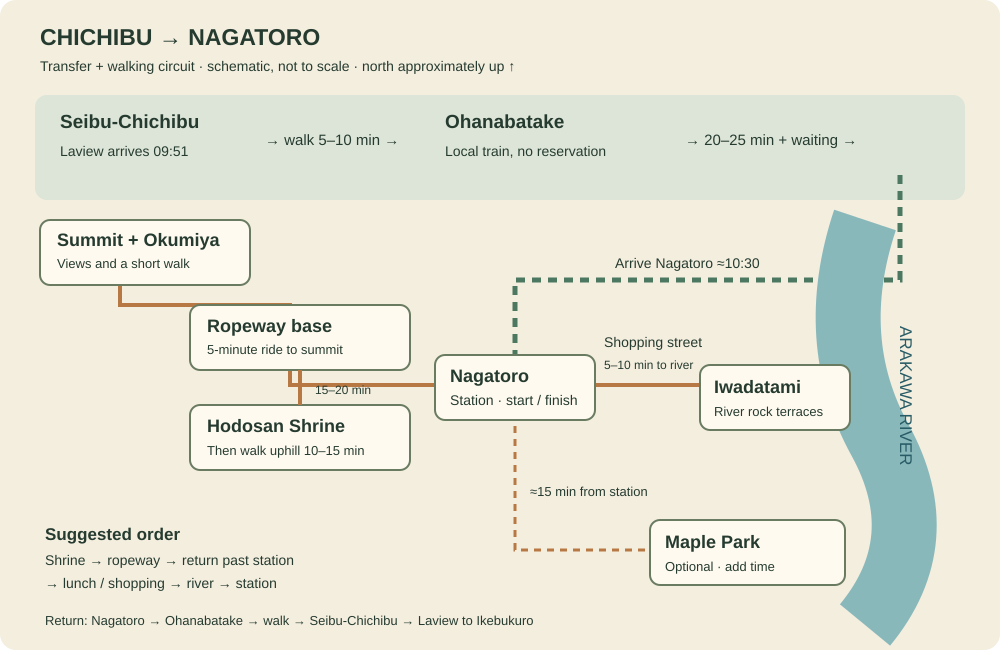
Follow the vlog's rhythm
Walk 15–20 minutes to Hodosan Shrine, visit and try miso dango. Do the mountain side first.
Walk uphill about 10–15 minutes to the ropeway. Five-minute ride each way; explore the summit and Okumiya. Allow for queues and service intervals.
Walk back towards Nagatoro Station, have lunch and browse the shopping street. Sweetfish, soba or snacks are options; choose on the day.
Iwadatami rock terraces and riverside photographs. Watch the boats without needing to take one. Leave plenty of time to sit and enjoy the view.
Tea or souvenirs, then the local train back to Ohanabatake. Choose the departure that gets you to Seibu-Chichibu by roughly 16:30, allowing the station walk.
Optional quick early dinner or station food; confirm restaurant hours. Be at the Laview boarding area by 17:10.
Laview back to Ikebukuro. JR via Akihabara, then walk back to APA Asakusabashi around 19:30–19:45.
Shorter or longer?
Earlier return · 16:24 Laview
Leave Nagatoro around 14:45–15:15, choosing an actual local connection that reaches Seibu-Chichibu by 16:05. Skip dinner and trim the river stop. Published arrival Ikebukuro 17:46; hotel around 18:30–18:45.
Foliage extension · Maple Park
Tsuki-no-Ishi Maple Park is about 15 minutes from Nagatoro Station. Replace souvenir time or another stop. The official 2026 programme lists evening illumination 6–29 November, 16:00–21:00, ¥500 adult; recheck before going. Staying after dark requires a later return train.
Riverboat · optional swap
Check the operator's desk and same-day water/weather status first. Allow roughly 60–90 minutes overall for tickets, waiting and logistics, not only the ride. Swap it for the summit excursion if keeping the day short. Boat fare is extra.
Skip Matsuri-no-Yu on the standard plan. Bathing plus dinner turns this into a longer evening. The shrine, ropeway and river already recreate the main experiences in your transcript.
Tickets without double-paying
Reserve the Laview seats first
Use the official Smooz link for two adults, both directions. Pick adjacent seats using the seat map if offered. The supplement is ¥900 per person each way: ¥1,800 ≈ ₹1,080 per person return, or ¥3,600 ≈ ₹2,160 for both travellers.
Confirm payment, date, stations and seats. A seat supplement does not replace the base ticket. Review the current change/refund conditions before buying; changed plans may incur a fee. No tickets have been purchased by this guide.
If your preferred train is full
Check adjacent Laview departures first. Ordinary Seibu trains via Hannō remain a slower, unreserved alternative; they lose the panoramic Laview experience. “Limited express” is the train category, not proof that tickets are almost sold out.
Base fares: SEIBU 1Day Pass + Nagatoro
For eligible non-Japanese passport holders, ¥2,000 ≈ ₹1,200 per adult covers the relevant Seibu and Chichibu Railway sections. Laview supplements and Tokyo JR travel are extra. Use the + Nagatoro version, not the plain Seibu pass.
The official page lists sale at Seibu Ikebukuro limited-express ticket offices. Allow extra time if buying that morning; online vouchers may require collection. Check opening and exchange conditions before choosing a seller.
What can wait?
Local-train travel and normal individual ropeway tickets do not need advance seat booking. Buy the ropeway on arrival after checking operation. Keep one Suica per person for the Tokyo JR legs.
Per adult; base pass plus both supplements.
≈₹300–420 per adult from Asakusabashi.
Per adult; check current operating notices.
Includes ¥1,500–2,000 for lunch/snacks. Add dinner, boat, illumination or onsen separately. ¥100 ≈ ₹60.
Official checks and useful links
Laview timetable ↗Laview fares + conditions ↗SEIBU + Nagatoro pass ↗Local railway timetable ↗Ropeway hours + fares ↗2026 autumn festival + foliage ↗Riverboat operation ↗
Checked 21 October 2026. Laview examples use Seibu's published timetable, revised 15 March 2025; reconfirm the selected November date before paying. Local-train connections and sightseeing windows are estimates. No live seat availability has been checked and no booking has been made.
Accommodation reservationsBooked stays and active optionsBrief room notes, station access and the conservative price used in the budget.
Preferred Tokyo sequenceHouse Ikebukuro → APA Asakusabashi
Keep House Ikebukuro for 20–22 Nov and APA Hotel Asakusabashi Ekimae for 22–25 Nov.
Branch to resolveNight of 19 November
The current House booking starts on 20 Nov. Add 19 Nov only if Kawaguchiko becomes a Tokyo day trip rather than an overnight.
Hotel Opera
Economy double, private shower, room-only; late 20:00 check-in.
- Nearest
- Ōkubo 2 min · Shin-Ōkubo 3 min
- Main station
- Shinjuku ~15 min walk / one JR stop
Hotel Siena
Standard double, private bath, room-only. Higher-priced option used for budgeting.
- Nearest
- Seibu-Shinjuku ~7 min · Higashi-Shinjuku ~8 min
- Main station
- JR Shinjuku ~8-11 min walk
Hotel Iidaya
Economy double, room-only; confirmation lists one 90-130 cm bed, so verify comfort for two.
- Main station
- JR Matsumoto Castle Exit · 1 min walk
- Bus terminal
- Across the station area · about 3-5 min
Yunohana Fuwari Yumotokan
Japanese futon room, shared bath and room-only - this is not the earlier half-board assumption.
- Nearest transport
- Hirayu Bus Terminal · about 4-5 min walk
- Rail connection
- Takayama Station · roughly 60 min by bus
Hotel Hana
Japanese-style futon room; smoking room; breakfast included.
- Main station
- Takayama Station · ~590 m / 7 min
- Bus terminal
- Nohi Bus Center · about 5-10 min
AB Hotel Nakatsugawa
Retained only as a record of the earlier no-car route.
- Nearest bus
- Tegano-naka · short walk
- Main station
- Nakatsugawa · local bus connection
Nezame Hotel
Well placed for Nezame-no-Toko and workable for lower Atera Valley. There is no hotel shuttle.
- Nearest bus
- Chugakko · about 2 min walk
- Main station
- Agematsu · 7-8 min by town bus
Smart Place Inn Kyoto Nijojo-mae
Retained only as a record of the earlier Kyoto route.
- Nearest
- Nijōjō-mae subway · ~4 min
- Main station
- Kyoto Station · roughly 20 min by bus/taxi
Guest House Hitsujian
Retained only as a record of the earlier Kyoto route.
- Nearest
- Nijōjō-mae subway · ~500 m / 8 min
- Main station
- Kyoto Station · roughly 20 min by bus/taxi
House Ikebukuro
Economy Japanese-style room for up to three with three single futons/beds. Shared bathroom and shower; free Wi-Fi, air-conditioning and blackout curtains.
- Access
- Ikebukuro C1 ~1 min · metro ~3 min · JR ~10 min
- Why this wins
- Best mix of sleep setup, west-Tokyo access and value
Lake House Kawaguchiko
Mountain-view twin futon room with shared bathroom; room-only. Keep only for the Fuji-overnight version.
- Main station
- Kawaguchiko · ~2.5 km / ~35 min walk
- Practical transfer
- Use local bus or taxi with luggage
Guesthouse Honobono
Mountain-view futon room, shared bath; free station shuttle by advance request. Keep only for the Fuji-overnight version.
- Main station
- Kawaguchiko · 2.2 km / ~26 min walk
- Best transfer
- Pre-arranged guesthouse shuttle
APA Hotel Asakusabashi Ekimae
13 m² standard room with private bath. Strongest overall base for east Tokyo, Akihabara and the airport departure.
- Access
- JR East Exit / Toei A3 · about 2 min walk
- Airport day
- Direct Narita-bound trains run on the Toei Asakusa Line
Preferred loop booking gaps
Secure Takayama for 14–17 Nov, Kiso-Fukushima for 17–19 Nov and Kawaguchiko for 19–20 Nov. No Magome hotel is needed: it is a day trip from Takayama on 16 Nov. Cancel Kyoto only after the car, accepted IDP and winter tyres are confirmed.
Gero–Magome–Kiso Car Loop decision
Drive via optional Gero to Magome and back on 16 Nov. On 17 Nov continue via Kaida, Kiso-Fukushima and Narai to Hilltop; use 18 Nov for Nezame and Atera. Drive to Kawaguchiko on 19 Nov, then return the car in Matsumoto on 20 Nov and take the Azusa to Tokyo.
Tokyo cancellation order
20–22 Nov: House Ikebukuro first; TenTen Guesthouse second only for its ₹13.5k price, then Asakusa Central, Sakura Nippori and Hotel Opera. TenTen is a 9 m² bunk-bed room with shared bath; House is also shared-bath but has three separate sleeping spaces. 22–25 Nov: keep APA Asakusabashi; APA Akihabara is the closest substitute, with the Ikebukuro options behind it unless Chichibu becomes the overriding priority.
Selected itinerary · Gero–Magome–Kiso Car LoopDay by day16 calendar dates · 15 nights
Rail/bus Rental car Slow day
10 NovArrive → Shinjuku after darkTokyo · 1/2
Plan
- Land at Narita Terminal 2 at 15:35. Allow 1½–2 hours for immigration, bags, cash and IC-card setup.
- Take Narita Express or an airport bus to Shinjuku, check in, then use the evening for Omoide Yokocho, Kabukicho lights and Korean food around Shin-Okubo.
- Complete Visit Japan Web before landing and carry a compact first-night essentials kit.
11 NovKamakura coastal afternoon · preferredTokyo · 2/2
Relaxed morning or optional Tsukiji breakfast, then leave Tokyo around noon for the Enoden coast and sunset. Return for dinner and pack for Matsumoto. Open the coastal guide →
12 NovTokyo → MatsumotoMatsumoto · 1/1
Plan
- Take Azusa 9, Shinjuku 09:00 → Matsumoto 11:39. Leave bags at a station-side hotel and have an early lunch.
- Use the castle exterior and moat before collecting the car from J-net Matsumoto Station Store at 14:00. Confirm tyres and ETC-card availability, then park at the hotel.
- Walk Nawate Street and Nakamachi after pickup if time and light allow.
13 NovKamikochi → HirayuHirayu · 1/1
Plan
- 07:15: leave Matsumoto in the rental car collected the previous day; carry breakfast and keep luggage concealed in the boot.
- 08:50: shuttle from Akandana; get off at Taisho Pond at 09:16 and walk to Kappa Bridge.
- 13:00 or 13:30: return from Kamikochi Bus Terminal, reaching the Hirayu stay around 13:40–14:10.
14 NovHirayu → TakayamaTakayama · 1/3
Plan
- Have breakfast and an unhurried morning onsen before checking out.
- Drive to Takayama, leave luggage, park once and use the afternoon for Jinya, Sanmachi and the riverside.
- Keep the lower Higashiyama route optional according to weather and daylight.
15 NovShirakawa-go + optional AinokuraTakayama · 2/3
Plan
- 08:15: leave Takayama after breakfast and use the E41 expressway.
- 09:15–12:45: park at Seseragi, cross Deai Bridge and walk Hachiman Shrine → Myozenji → Kanda or Wada House → observatory.
- 13:00: choose: drive straight back to Takayama, or continue about 30–40 minutes to quieter Ainokura for a 60–90 minute visit.
- Around 17:00: reach Takayama if Ainokura is added; expect the final section after sunset.
16 NovGero + Magome short NakasendoTakayama · 3/3
Plan
- 08:00: drive from Takayama toward Magome via Gero.
- 09:15–10:15: optional compact Gero stop for the riverside, Onsenji or a footbath.
- Around 12:00: reach Magome, have lunch and walk the old village.
- 13:00–15:00: follow the Nakasendo toward Magome Pass for a short out-and-back walk, then drive back to Takayama.
17 NovKaida → Kiso-Fukushima → NaraiHilltop · 1/2
Plan
- 08:15: check out and take the Route 361 detour toward Kaida Highlands.
- 10:30–11:15: stop for the highland landscape, Mount Ontake views and Kiso horses.
- 11:45–13:30: walk Kiso-Fukushima’s old quarter and have lunch.
- 14:15–16:30: explore Narai-juku, then check in at Hilltop for dinner.
18 NovNezame + Atera ValleyHilltop · 2/2
Plan
- 08:15: leave Hilltop; visit Nezame-no-Toko around 08:45–09:45.
- 10:15–12:45: explore Atera Valley, including Kitsunegafuchi and Tanukigafuchi.
- Have lunch near Route 19.
- 14:15–16:00: add Kakizore Valley’s suspension bridge and short Ushigataki walk only if the trail and daylight are comfortable.
19 NovKiso → Kawaguchiko by carKawaguchiko · 1/1
Plan
- 08:30: check out and leave Kiso-Fukushima.
- 09:15–11:00: walk Narai-juku; skip Kiso-Hirasawa if the morning runs late.
- 11:15–15:00: drive to Kawaguchiko with lunch and road-condition buffers.
- Check in, park and use the remaining light for the lakeshore or Momiji Corridor.
20 NovFuji → return car → TokyoTokyo · 1/5
Plan
- Use dawn–08:45 for the clearest north-shore Fuji views, then check out.
- By 09:30: leave Kawaguchiko. Allow roughly 2½ hours' driving plus a generous road buffer.
- 13:15–13:30: refuel and reach J-net Matsumoto Station Store for the confirmed 14:00 return.
- Take a later reserved Azusa to Tokyo and keep the evening local.
21 NovFlexible Tokyo / Kamakura fallbackTokyo · 2/5
Choose Tsukiji and gardens, neighbourhood walks, or Kamakura if the 11th was unsuitable. Tokyo activities are swappable; check shop hours.
22 NovHotel move + Tokyo or Kamakura coastTokyo · 3/5
Drop bags at APA Asakusabashi after confirming storage. Choose Tokyo walks, or leave by noon for the coast and check in after sunset. Compare available days →
23 NovHoliday · flexible Tokyo or coastal fallbackTokyo · 4/5
Prefer flexible Tokyo exploring. Kamakura remains possible if coastal weather is best today; expect holiday crowds. Save Nagatoro for the weekday where possible.
24 NovNagatoro · preferred weekdayTokyo · 5/5
Prefer the Laview, Hodosan Shrine and ropeway, shopping street and Iwadatami. Boat and Chichibu dinner are optional. Full route, map and booking guide → Use this for Kamakura only if rescheduling Nagatoro or weather requires.
25 NovDirect train → Narita T2-
Plan
- CX527 departs Narita Terminal 2 at 14:20. Check out around 08:50 and target the current 09:17 Narita Airport-bound Access Express from Asakusabashi; stay on the train through Oshiage onto the Keisei line.
- This is an unreserved commuter train. Recheck the weekday timetable in November; the current 09:38 airport-bound service is the fallback.
- Keep passports, tickets, tax-free purchases and essential medication accessible.
Optional backup · kept for referenceNikko day tripNot in the working itinerary; expand only if you decide to restore it.
Recommended booking09:39 in · 16:20 out
SPACIA X outbound and direct Revaty return. If Oyado Cocochi is confirmed, board and leave the return train at Kita-senju; expect to reach the hotel around 18:45–18:55.
- Book
- 11 Oct · 05:30 IST
- For two
- ≈₹8,450
- Board
- Kita-senju if Cocochi
If Cocochi is confirmed
Use Kita-senju, not Asakusa. Leave Oyado Cocochi around 06:45–06:50, use the connected JR → Chiyoda transfer at Nishi-nippori and reach Kita-senju by about 07:30. This leaves roughly 30 minutes to follow Tobu Skytree Line / Limited Express / platforms 1–2 signs before the 08:03 SPACIA X.
01Boarding mapsExact route from Shinjuku
Cocochi → Tobu Kita-senju
Oyado CocochiWalk about 3 min
→Shin-OkuboYamanote · Ikebukuro/Ueno
→Nishi-nipporiChiyoda · Kita-ayase
→Kita-senjuTobu 1F · platforms 1/2
Enter in Maps
- From
- Oyado Cocochi
- To
- Tobu Kita-senju Station · 東武北千住駅
- Set
- Transit · arrive by 07:30–07:35
Maps should normally show Shin-Okubo → Nishi-nippori → Kita-senju. The hotel confirms it is about three minutes from Shin-Okubo; there is a signed JR–Chiyoda connecting transfer at Nishi-nippori.
- Take the Yamanote Line toward Ikebukuro/Ueno and get off at Nishi-nippori. Follow Chiyoda Line transfer signs rather than a street exit; tap Suica at the connecting gate.
- Take the Chiyoda Line toward Kita-ayase/Ayase one stop beyond Machiya to Kita-senju. Follow Tobu Skytree Line / Limited Express / platforms 1–2 to the 1F boarding area.
- For the return, book 16:20 Tobu-Nikko → Kita-senju. Revaty Kegon 42 reaches Kita-senju at about 18:02; reverse the route via Nishi-nippori and walk back to Cocochi.
Shinjuku → Tobu Asakusa
ShinjukuMarunouchi M08
→Akasaka-mitsukeEasy transfer · M13/G05
→AsakusaGinza G19
→Exit 7 / TobuEKIMISE · platforms 3/4
Enter in Maps
- From
- Your exact Shinjuku hotel listing
- To
- Tobu Asakusa Station · 東武浅草駅
- Set
- Transit · arrive by 07:20
Choose a route ending at Ginza Line G19. There is no direct Shinjuku–Asakusa train; one transfer is normal. Avoid a route ending at Toei Asakusa A18 unless allowing an extra outdoor walk.
- Take the Marunouchi Line toward Ikebukuro, then transfer at Akasaka-mitsuke to the Ginza Line for Asakusa.
- At Ginza Line Asakusa, follow Exit 7 / Tobu Railway / Tobu Information Center signs to the EKIMISE/Tobu building.
- Tap Suica at the Tobu gate, then use the Limited Express entrance for platforms 3/4. Show the ticketless reservation when requested.
Verdict: the proposed Oyado Cocochi route is easy enough—roughly 7.5/10 rather than effortless. Nishi-nippori is a connected, signed transfer; Kita-senju is the only large-station step, so preserve a 25–30 minute buffer. Suica handles the JR, Metro and Tobu base fares; the ticketless Limited Express reservation is separate.
02The dayCore route + optional final stop
- Leave Oyado Cocochi
Walk to Shin-Okubo, change at Nishi-nippori and target Tobu Kita-senju by 07:30–07:35.
- SPACIA X · Kita-senju → Tobu-Nikko
Book the Limited Express reservation from Kita-senju. Arrive Tobu-Nikko at 09:39.
- Arrive and tap Suica on the bus
Tobu-Nikko → Shinkyo. Photograph the bridge, then walk uphill into the heritage precinct.
- Shinkyo → Shoyoen → Rinnoji
Prioritise Shoyoen for lower-Nikko foliage; continue through Rinnoji without backtracking.
- Toshogu → Futarasan
Allow about 90 minutes for Toshogu, then 30 minutes for Futarasan.
- Lunch near Nishi-sando
Keep it to roughly 40 minutes during foliage season.
- Taiyuin; add Tamozawa only if moving well
Taiyuin is the efficient final sight. Tamozawa garden is the optional foliage extension for the 16:20 return.
- Bus back to Tobu-Nikko
Target the station by 15:50 for the direct 16:20 train.
- Revaty Kegon → Kita-senju
Leave the train around 18:02, reverse the Nishi-nippori route and expect Oyado Cocochi around 18:45–18:55.
03Train choicesBoarding and return trade-offs
| Outbound | Tobu-Nikko | Verdict |
|---|---|---|
| 07:00 Asakusa Revaty | 08:54 | Maximum sightseeing time; much earlier hotel start. |
| 08:03 Kita-senju SPACIA X | 09:39 | Recommended from Cocochi: practical start and a full central-Nikko visit. |
| 09:00 Asakusa SPACIA X | 10:50 | Too late for the compact shrine-and-foliage plan. |
Kita-senju 08:03
SPACIA X → Tobu-Nikko 09:39. Book specifically from Kita-senju and use the Limited Express area beside outbound Tobu platforms 1/2.
Asakusa 07:50
Same train and arrival. Use Tobu Asakusa platforms 3/4 via Ginza Line Exit 7 and allow 25–30 minutes.
| Return | Hotel estimate | Use it when |
|---|---|---|
| 14:57 Tobu-Nikko → Kita-senju | Cocochi ≈17:15 | Maximum Tokyo evening; central Nikko feels compressed. |
| Local to Shimo-imaichi + 15:50 SPACIA X → Kita-senju 17:21 | Cocochi ≈18:05 | Earlier hotel arrival, but requires a Nikko-side transfer and loses sightseeing time. |
| 16:20 Revaty direct → Kita-senju ≈18:02 | Cocochi ≈18:45–18:55 | Recommended: longest visit, simplest boarding and no train change. |
04Tickets and costsSimple Suica plan versus pass · two adults
Suica + Limited Express
≈₹8,450 totalApproximately ₹3,400 basic rail fare, ₹4,360 Limited Express reservations and about ₹690 for the two planned return bus journeys. Tap one Suica per adult throughout.
World Heritage Pass + Limited Express
≈₹8,010 totalSaves only about ₹440 for both. It replaces Suica for the covered Tobu train and buses but adds digital-pass activation and staffed/QR validation—especially worth avoiding at Kita-senju.
Also allow approximately ₹900–₹1,000 combined for two adults' return travel between Oyado Cocochi and Kita-senju. The approximately ₹8,450 figure uses individual bus fares, not a bus day pass. Shrine admissions and food are separate; INR estimates will move with the card exchange rate.
05Booking and boarding checklistKeep this open on the morning
- At 05:30 IST on 11 October, reserve two Standard seats: Kita-senju → Tobu-Nikko on SPACIA X 1 and Tobu-Nikko → Kita-senju on Revaty Kegon 42.
- Use one Suica per adult for the ordinary/base fare. The ticketless Limited Express purchase is the separate reserved-seat supplement.
- Save the Limited Express confirmations offline. No paper collection is required; exact seat numbers appear after payment.
- Leave Oyado Cocochi around 06:45–06:50 and enter Tobu Kita-senju Station / 東武北千住駅 as the Maps destination—not simply “Kita-senju.”
- At Kita-senju, allow 25–30 minutes and follow Tobu Skytree Line / Limited Express / platforms 1–2 signs to 1F.
- Tap Suica for Nikko buses as well. Keep approximately ₹2,100 equivalent per person available for the uncovered round-trip base rail fare and planned buses.
Tokyo · 10–12 & 20–25 NovemberTokyo days, chosen with the weatherTwo hotel bases, city walks, three worthwhile escapes and a simple airport day.
20–22 Nov · preferredHouse Ikebukuro
→
¥30,213 · ≈₹18.4k · two nights
22–25 Nov · preferredAPA Asakusabashi
→
₹30k · three nights
25 Nov · CX527Narita T2 · 14:20
Target the 09:17 direct train
House Ikebukuro
Best balance of comfort, value and access for the first block. The Economy Japanese-style room has three separate single sleeping spaces, air-conditioning, blackout curtains and free Wi-Fi; the bathroom and shower are shared.
- 2-20-1 Ikebukuro, Toshima-ku; about 1 minute from C1, 3 minutes from the metro and roughly 10 minutes from JR Ikebukuro.
- From Matsumoto, take the Azusa to Shinjuku and make one JR transfer to Ikebukuro. The Laview for Chichibu is easy from here.
- Stronger sleep setup than TenTen's 9 m² room with one bunk bed.
APA Hotel Asakusabashi Ekimae
Best overall second base: a compact 13 m² standard room with private bath, roughly two minutes from both the JR East Exit and Toei A3.
- Akihabara is one JR stop; Kuramae, Kappabashi, Kanda and east Tokyo are easy evening additions.
- Direct Narita-bound services make departure day materially simpler.
- APA Akihabara Ekikita is the nearest backup; do not pay more for APA Ikebukuro without a specific reason.
Backup order
20–22: House Ikebukuro → TenTen ₹13.5k → Asakusa Central ₹27.3k → Sakura Nippori ₹19.2k → Hotel Opera ₹18,862. TenTen saves money but means a bunk bed, shared bath and usually an early check-in cutoff; Hotel Opera is a love hotel with 20:00 check-in.
22–25: APA Asakusabashi → APA Akihabara ₹31.9k → Sakura Ikebukuro ₹26.2k → Changtee ₹24k → APA Ikebukuro ₹32.657k → Hotel Siena ₹30k.
How to use these daysDecide the excursions in Tokyo
Kamakura is a definite coastal outing: prefer 11 November, with 21 or 22 November as practical fallbacks. Prefer 24 November for Nagatoro. Tokyo neighbourhoods, gardens and Tsukiji can move with your mood and opening days; none is a fixed excursion constraint. Use the short-range coastal forecast before choosing. Open the coastal guide and date ranking →
The working calendar
Arrival still gets an evening
Narita 15:35 → Shinjuku check-in → Omoide Yokocho, Kabukicho and Shin-Okubo. Keep it local, but do not write off the night.
Kamakura sunset · preferred day
Relaxed morning, then the Enoden coast and sunset. Tokyo walks or Tsukiji can fit the morning or move to another day. Coastal afternoon guide →
Tokyo → Matsumoto
Use the booked Azusa connection, then Matsumoto Castle, Nawate Street and Nakamachi after leaving the bags.
Preferred Fuji sequence
19 Nov: drive Kiso-Fukushima → Kawaguchiko and keep the car overnight. 20 Nov: use the Fuji morning, drive to Matsumoto, return the car and take the Azusa to Tokyo.
Flexible Tokyo / Kamakura fallback
Use Tsukiji, Hamarikyu or neighbourhood walks if appealing; swap for Kamakura if the 11th was unsuitable. Check individual market opening days.
Hotel move + Rikugien
House Ikebukuro → leave bags at APA Asakusabashi. Choose Rikugien and Yanaka, or leave by noon for the Kamakura coast after confirming luggage storage. Return for check-in after sunset.
Holiday city day + weekday Nagatoro
Prefer Tokyo on the 23rd and Nagatoro on the 24th. Kamakura can use either if weather requires, but protect Nagatoro’s weekday where possible.
Asakusabashi → Narita T2
Check out around 08:50. Current weekday timetable: 09:17 direct Access Express to Narita Airport, with 09:38 as fallback. Recheck in November; this is an unreserved commuter service.
Fuji is already in the road trip
Kawaguchiko is the 19 November overnight, not a Tokyo day trip. If the Fuji forecast is poor, the flexible fallback is to return the car early and add a Tokyo night.
City clusters worth prioritising
Tsukiji → Hamarikyu
Early market breakfast, tidal garden and waterfront contrast. Use the 11th or a later Tokyo morning; check individual shop hours.
Rikugien → Yanaka–Nezu
Garden at opening, cemetery lanes, Yanaka Ginza, Sendagi and Nezu backstreets.
Kiyosumi → Monzen-Nakacho
Kiyosumi Garden, warehouse cafés, Fukagawa lanes and small riverside restaurants.
Kagurazaka → Iidabashi
Sloping lanes, small shrines, canal walks and an excellent evening food district.
Nakano → Koenji
Nakano Broadway, vintage stores, covered shopping streets, live-house energy and izakaya.
Kappabashi → Kuramae → Kanda
Kitchenware before closing, craft cafés, Akihabara after dark and food under the Kanda tracks.
Deliberately skipped repeats: Sensō-ji, Tokyo Skytree, Meiji Jingu and the Tokyo Metropolitan Government Building. Add Daikanyama–Nakameguro only if a modern design-and-river cluster appeals more than one of the old-Tokyo days.
Four day trips, four different rewards
Maximum spectacleIzu Peninsula
Choose it on the clearest, least-windy day for the trip's most dramatic new landscape.
Decision rule: Izu needs visibility and low wind; Chichibu benefits from good inland colour and confirmed river/ropeway operation; Kamakura is the robust cultural-and-coast day; Yokohama is the easiest late start or uncertain-weather option.
Yokohama
A late-colour garden, working port and skyline at dusk—visually different from the mountain half of the trip.
Route
Start at Sankeien for the historic buildings and autumn garden, then bus to Chinatown for lunch. Walk Yamashita Park, Osanbashi Pier, Red Brick Warehouse and Minato Mirai toward sunset.
Why it earns the slot
No reservation, no dawn start and easy to shorten. Recent traveller reports consistently favour Sankeien and the free Osanbashi viewpoint; skip the cable car and choose the waterfront walk.
Kamakura & the coast
Enoden, coastal roads, coffee and evening light. Prefer 11 November; 21 or 22 November are practical fallbacks.
Route
Optional Kamakurakōkōmae crossing → Shichirigahama → Inamuragasaki sunset. Leave Tokyo around noon and reach your sunset spot by 15:45–16:00.
Make it shorter
Just Shichirigahama for two hours is enough. Add Hase-dera only if you want a longer outing.
Mount Omuro & Jogasaki
A volcanic summit above Fuji and the Izu Islands, black lava cliffs and a Pacific-facing bath.
Early route
Leave Asakusabashi around 05:45, use an early Shinkansen from Tokyo to Atami, continue to Izu-Kogen, then bus or taxi to Mount Omuro for the first practical chairlift.
Core day
Walk the short summit rim, taxi to Kadowaki Suspension Bridge and a selected Jogasaki coast section, eat seafood, then finish at Akazawa's ocean-view day onsen.
Go/no-go
Go only with good visibility and low wind; the exposed chairlift can suspend. Local taxis protect the short November daylight.
Chichibu & Nagatoro
Full visual guide · train times, local map and booking →
Panoramic-window Laview, retro railway, Hodosan's slopes and the Arakawa's rock terraces.
Route
Reserve the Laview from Ikebukuro to Seibu-Chichibu, walk to Ohanabatake and take the local railway to Nagatoro. Visit Hodosan Shrine and the five-minute ropeway first; check the boat desk only if choosing the optional ride.
Afternoon
Visit the summit terrace and Okumiya, descend for miso dango or grilled sweetfish, follow the nostalgic shopping street to Iwadatami, and add Tsuki-no-Ishi Maple Park if live colour is good.
Evening + checks
Return to Seibu-Chichibu for waraji katsudon or Matsuri-no-Yu. Reserve both Laview directions and verify same-day river and ropeway operation.
For Nagatoro on 24 November, book both Laview directions from 24 October at 07:00 JST / 03:30 IST. Booking details → Yokohama and Kamakura need no advance ordinary-train booking.
Compare Fuji visibility, Izu wind, inland colour and river/ropeway notices before assigning dates.
Verify the Narita-bound train on the official weekday timetable and keep a Skyliner transfer as backup.
Reservation calendarKey public-transport bookingsCheck timetables again before payment.
| Date | Journey | Recommended service | Cost per person | Action |
|---|---|---|---|---|
| 12 Nov | Shinjuku → Matsumoto | Azusa 9, 09:00 → 11:39 | ~¥6,620 / ~₹3,985 | Reserve adjacent seats from 12 Oct. |
| 13 Nov | Matsumoto → Hirayu | 07:40 → 09:08 reserved coach | ¥3,000 / ~₹1,805 | Superseded by the rental-car plan. |
| 13 Nov | Akandana ↔ Kamikochi | Non-reserved shuttle | ¥2,800 return pp + ¥600 parking | Buy at Akandana; preferred 08:50 out / 13:30 back. |
| 15 Nov | Takayama → Shirakawa-go → optional Ainokura → Takayama | Rental car · leave 08:15 | ¥2,000 Shirakawa parking + ¥1,000 Ainokura parking; tolls and fuel extra | Open drive guide |
| 16 Nov | Takayama → Magome / Tsumago → Takayama | 08:00 → 10:45; 15:00 → 18:00 | ¥10,000 return / ~₹6,020 | Reserve both coach legs. |
| 20 Nov | Matsumoto → Tokyo | Reserved Limited Express Azusa | ~¥6,620 / ~₹3,985 | Choose a service after the confirmed car-return time. |
| Weather fallback only | Tokyo ↔ Kawaguchiko | Reserved Shinjuku highway coach | ¥4,000 online return / ~₹2,430 | Use only if the 19 Nov lake overnight is dropped. |
Three justified early starts
Leave Matsumoto around 07:45 for Kamikochi, start early for Shirakawa-go on 15 November and take the 08:00 Magome coach on 16 November. Most other departures can be after 09:00.
Complete trip budget · two adultsFlights and ground costsConfirmed airfare plus the conservative on-ground planning range.
| Category | Couple estimate | Assumption |
|---|---|---|
| Confirmed international flights | ₹1,31,185 | Ticket 1: ₹61,881 · Ticket 2: ₹69,304. Booking references remain private. |
| Rental car · confirmed | ¥63,535 | J-net Matsumoto Station, 12 Nov 14:00–20 Nov 14:00. Includes CDW, super CDW, GPS and ETC unit; fuel, tolls, parking and any ETC card are extra. |
| Accommodation | Recalculate after final bookings | Confirm Kiso-Fukushima and Kawaguchiko, shorten the Takayama hold to 14–17 November, then remove superseded Nakatsugawa and Kyoto holds. Local accommodation taxes are extra. |
| Public transport | ₹78,000-85,000 | About ¥61,500 per person plus local-transfer cushion. |
| Food | ₹90,000-1.20 lakh | Medium budget. Hirayu is room-only; only the Takayama booking explicitly includes breakfast. |
| Admissions and onsen | ₹20,000-30,000 | Temples, baths and modest paid sights. |
| Insurance, eSIM and contingency | ₹12,000-20,000 | Shopping excluded. |
| Ground-trip planning total | Recalculate | Rental is now fixed; update after the final Kiso and Kawaguchiko accommodation, fuel, toll and parking costs are confirmed. |
| Complete trip total | Recalculate | Confirmed flights are ₹1,31,185; add the revised ground total once duplicate holds are removed. |
Rental bookedJ-net · 12–20 November · ¥63,535
Pickup and return are both at Matsumoto Station Store at 14:00. The coverage level suits the loop; still confirm studless winter tyres, accepted IDP and whether the ETC card itself is supplied. Free cancellation ends 5 November at 23:59 JST.
Research and resourcesPlanning links, reports and live checksOfficial transport sources plus dated context from previous research.
Nohi BusShirakawa-go timetable
Nohi BusHirayu-Kamikochi access
AlpicoMatsumoto-Hirayu coach
Nohi BusTakayama-Nakasendo route
KamakuraOfficial visitor guide
Cathay PacificManage booking and travel updates
Toyota Rent a CarMatsumoto Station branch
NEXCOTakayama-Shirakawa-go toll and drive time
KamikochiCar restrictions and shuttle access
Shinhotaka RopewayOperating status and weather
Fujikyu BusShinjuku–Kawaguchiko timetable, fare and booking
Fujiyama ConnectHighway-bus reservations
JR CentralShinkansen timetable
Japan Guide · 7 Nov 2025Dated Kawaguchiko foliage inspection
Takayama · 2025 reportsDated city, Furukawa and Okuhida observations
Shirakawa-go · officialTypical foliage timing
Kiso Tourism · 14 Nov 2025Dated valley colour and leaf-fall evidence
Japan GuideSeason reports and Tokyo progression
Reddit · Nov 2025 trip reportFirsthand Alps, Takayama and Nakasendo logistics
Official sources are for timetables, operating status and reservations. Dated tourism and Reddit reports are useful firsthand context, not a guarantee of 2026 foliage or services.